RAIL 2020Original text
Investigating an Approach for Low Resource Language Dataset Creation, Curation and Classification: Setswana and Sepedi
This is the original text of the paper. Translations are linked above.
Proceedings of the first workshop on Resources for African Indigenous Languages.
Original text, shown under its licence (CC BY-NC 4.0). Reuse allowed with attribution, non-commercial only. The translations on this site are by Ernst van Gassen (Arktos AI Lab).
Plain text for reuse, with its licence: English · LICENSE
Affiliations
Vukosi Marivate1,2, Tshephisho Sefara2, Vongani Chabalala3, Keamogetswe Makhaya4
Tumisho Mokgonyane5, Rethabile Mokoena6, Abiodun Modupe7,1
University of Pretoria1, CSIR2, University of Zululand3, University of Cape Town4
University of Limpopo5, North-West University6, University of the Witwatersrand7
E-mail addresses removed for privacy. They are in the original PDF.
Abstract
The recent advances in Natural Language Processing have only been a boon for well represented languages, negating research in lesser known global languages. This is in part due to the availability of curated data and research resources. One of the current challenges concerning low-resourced languages are clear guidelines on the collection, curation and preparation of datasets for different use-cases. In this work, we take on the task of creating two datasets that are focused on news headlines (i.e short text) for Setswana and Sepedi and the creation of a news topic classification task from these datasets. In this study, we document our work, propose baselines for classification, and investigate an approach on data augmentation better suited to low-resourced languages in order to improve the performance of the classifiers.
1. Introduction
The most pressing issues with regard to low-resource languages are the lack of sufficient language resources, like features related to automation. In this study, we introduce an investigation of a low-resource language that provides automatic formulation and customisation of new capabilities from existing ones. While there are more than six thousand languages spoken globally, the availability of resources among each of those are extraordinarily unbalanced (Nettle, 1998). For example, if we focus on language resources annotated on the public domain, as of November 2019, AG corpus released about 496,835 news articles related to the English language from more than 200 sources. Additionally, the Reuters News Dataset (Lewis, 1997) comprise roughly 10,788 annotated texts from the Reuters financial newswire. Moreover, the New York Times Annotated Corpusholds over 1.8 million articles (Sandhaus, 2008). Lastly, Google Translate only supports around 100 languages (Johnson et al., 2017). significant amount of knowledge exists for only a small number of languages, neglecting 17% out of the world's language categories labelled as low-resource, and there are currently no standard annotated tokens in low-resource languages (Strassel and Tracey, 2016). This in turn, makes it challenging to develop various mechanisms and tools used for Natural Language Processing (NLP).
In South Africa, most of the news websites (private and public) are published in English, despite there being 11 official languages (including English). In this paper, we list the premium newspapers by circulation as per the first Quarter of 2019 (Bureau of Circulations, 2019) (Table 1). Currently, there is a lack of information surrounding 8 of the 11 official South African languages, with the exception of English, Afrikaans and isiZulu which contain most of the reported datasets. n this work, we aim to provide a general framework for two of the 11 South African languages, to create an annotated linguistic resource for Setswana and Sepedi news headlines. In this study, we applied data sources of the news headlines from the South African Broadcast Corporation (SABC), their social media streams and a few acoustic news. Unfortunately, at the time of this study, we did not have any direct access to news reports, and hopefully this study can promote collaboration between the national broadcaster and NLP researchers.
Table 1: Top newspapers in South Africa with their languages
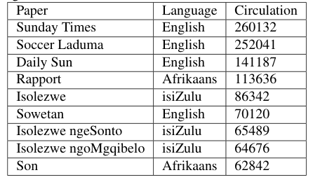
The rest of the work is organized as follows. Section 2. discusses prior work that has gone into building local corpora in South Africa and how they have been used. Section 3. presents the proposed approach to build a local news corpora and annotating the corpora with categories. From here, we focus on ways to gather data for vectorization and building word embeddings (needing an expanded corpus). We also release and make pre-trained word embeddings for 2 local languages as part of this work (Marivate and Sefara, 2020a). Section 4. investigate building classification models for the Setswana and Sepedi news and improve those classifiers using a 2 step augmentation approach inspired by work on hierarchical language models (Yu et al., 2019). Finally, Section 5. concludes and proposes a path forward for this work.
2. Prior Work
Creating sizeable language resources for low resource languages is important in improving available data for study (Zoph et al., 2016) and cultural preservation. Focusing on the African continent, we note that there are few annotated datasets that are openly available for Natural Language Processing tasks such as classification. In South Africa, the South African Center for Digital Language Resources (SADiLaR) has worked to curate datasets of local South African languages. There remain gaps such as accessing large corpora and data from sources such as broadcasters and news organizations as they have sizeable catalogs that are yet to make it into the public domain. In this work, we work to fill such a gap by collecting, annotating and training classifier models for news headlines in Setswana and Sepedi. As the data that we do find publicly is still small, we also have to deal with the challenges of Machine Learning on small data. Machine learning systems perform poorly in presence of small training sets due to overfitting. To avoid this problem, data augmentation can be used. The technique is well known in the field of image processing (Cubuk et al., 2019). Data augmentation refers to the augmentation of the training set with artificial, generated, training examples. This technique is used less frequently in NLP but a number of few studies applied data augmentation.
Silfverberg et al. (2017) use data augmentation to counteract overfitting where recurrent neural network (RNN) Encoder-Decoder is implemented specifically geared toward a low-resource setting. Authors apply data augmentation by finding words that share word stem for example fizzle and fizzling share fizzl. Then authors replace a stem with another string.
Zhang et al. (2015) apply data augmentation by using synonyms as substitute words for the original words. However, Kobayashi (2018) states that synonyms are very limited and the synonym-based augmentation cannot produce numerous different patterns from the original texts. Hence, Kobayashi (2018) proposes contextual data augmentation by replacing words that are predicted by a language model given the context surrounding the original words to be augmented.
As Wei and Zou (2019) states that these techniques are valid, they are not often used in practice because they have a high cost of implementation relative to performance gain. They propose an easy data augmentation as techniques for boosting performance on text classification tasks. These techniques involve synonym replacement, random insertion, random swap, and random deletion of a word. Authors observed good performance when using fraction of the dataset (%):1, 5, 10, 20, 30, 40, 50, 60, 70, 80, 90,100, as the data size increases, the accuracy also increases for augmented and original data. Original data obtained highest accuracy of 88.3% at 100% data size while augmented data obtained accuracy of 88.6% at 50% data size.
3. Developing news classification models for Setswana and Sepedi
In this work, we investigate the development of a 2 step text augmentation method in order to be improve classification models for Setswana and Sepedi. To do this we had to first identify a suitable data source. Collect the data, and then annotate the datasets with news categories. After the data is collected and annotated, we then worked to create classification models from the data as is and then use a word embedding and document embedding augmentation approach. In this section discuss how data was collected as well as the approach we use to build classification models.
3.1. Data Collection, Cleaning and Annotation
Before we can train classification models, we first have to collect data for 2 distinct processes. First, we present our collected news dataset as well as its annotation. We then discuss how we collected larger datasets for better vectorisation.
3.1.1. News data collection and annotation
The news data we collected is from the SABC Facebook pages. The SABC is the public broadcaster for South Africa. Specifically, data was collected from Motsweding FM (An SABC Setswana radio station) and Thobela FM (An SABC Sepedi radio station). We scraped the news headlines that are published as posts on both Facebook pages. We claim no copyright for the content but used the data for research purposes. We summarize the datasets in Table 2. We visualize the token distributions in Setswana and Sepedi in Figures 1 and 2 respectively.
Table 2: News Data Sets
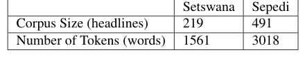
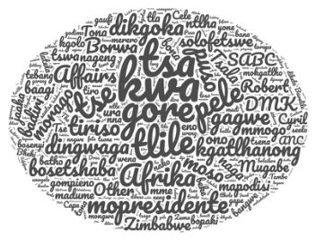
Figure 1: Setswana Wordcloud
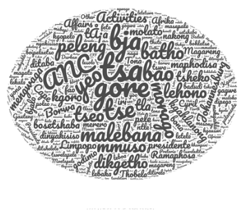
Figure 2: Sepedi Wordcloud
As can be seen, the datasets are relatively small and as such, we have to look at other ways to build vectorizers that can better generalize as the word token diversity would be very low.
We annotated the datasets by categorizing the news headlines into: Legal, General News,Sports, Other, Politics, Traffic News, Community Activities, Crime, Business and Foreign Affairs. Annotation was done after reading the headlines and coming up with categories that fit both datasets. We show the distribution of the labels in both the Setswana and Sepedi data sets in Figures 3 and 4 respectively. For this work, we only explore single label categorization for each article. It remains future work to look at the multi-label case. As such, there might be some noise in the labels. Examples from the Sepedi annotated news corpus are shown next:
Tsela ya N1 ka Borwa kgauswi le Mantsole Weighbridge ka mo Limpopo ebe e tswaletswe lebakanyana ka morago ga kotsi yeo e hlagilego. Traffic
Tona ya toka Michael Masutha,ore bahlankedi ba kgoro ya ditirelo tsa tshokollo ya bagolegwa bao ba tateditswego dithieeletsong tsa khomisene ya go nyakisisa mabarebare a go gogwa ga mmuso ka nko,ba swanetse go hlalosa gore ke ka lebaka la eng ba sa swanelwa go fegwa mesomong Legal
The full dataset is made available online (Marivate and Sefara, 2020b) for further research use and improvements to the annotation. As previously discussed, we used larger corpora to create language vectorizers for downstream NLP tasks. We discuss this next.
3.1.2. Vectorizers
Before we get into the annotated dataset, we needed to create pre-trained vectorizers in order to be able to build more classifiers that generalize better later on. For this reason we collected different corpora for each language in such as way that we could create Bag of Words, TFIDF, Word2vec (Mikolov et al., 2013) and FastText (Bojanowski et al., 2017) vectorizers (Table 3). We also make these vectorizers available for other researchers to use.
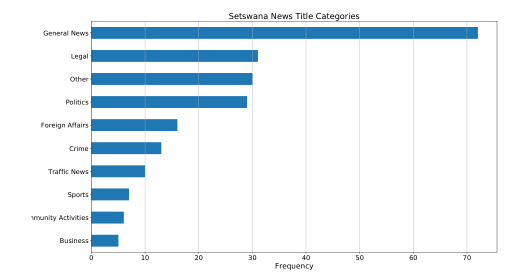
Figure 3: Setswana news title category distribution
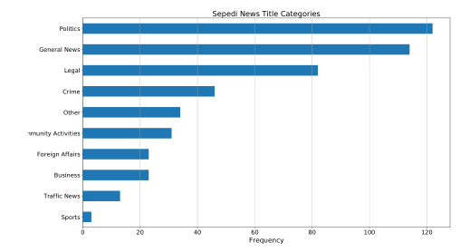
Figure 4: Sepedi news title category distribution
Table 3: Vectorizer Corpora Sizes in number of lines (number of tokens)
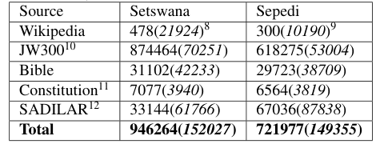
3.2. News Classification Models
We explore the use of a few classification algorithms to train news classification models. Specifically we train Logistic Regression, Support Vector Classification, XGBoost, and MLP Neural Network.
To deal with the challenge of having a small amount of data on short text, we use data augmentation methods, specifically a word embedding based augmentation (Wang and Yang, 2015), approach that has been shown to work well on short text (Marivate and Sefara, 2019). We use this approach since we are not able to use other augmentation methods such as synonym based (requires developed Wordnet Synsets (Kobayashi, 2018)), language models (larger corpora needed train) and back-translation (not readily available for South African languages). We develop and present the use of both word and document embeddings (as an augmentation quality check) inspired by a hierarchical approach to augmentation (Yu et al., 2019).
4. Experiments and Results
This Section presents the experiments and results. As this is still work in progress, we present some avenues explored in both training classifiers and evaluating them for the task of news headline classification for Setswana and Sepedi.
4.1. Experimental Setup
For each classification problem, we perform 5 fold cross validation. For the bag-of-words and TFIDF vectorizers, we use a maximum token size of 20,000. For word embeddings and language embeddings we use size 50. All vectorizers were trained on the large corpora presented earlier.
4.1.1. Baseline Experiments
We run the baseline experiments with the original data using 5-fold cross validation. We show the performance (in terms of weighted F1 score) in the Figures 5 and 6. We show the baseline results as orig. For both the Bag-of-Words (TF) and TFIDF, the MLP performs very well comparatively to the other methods. In general the TFIDF performs better.
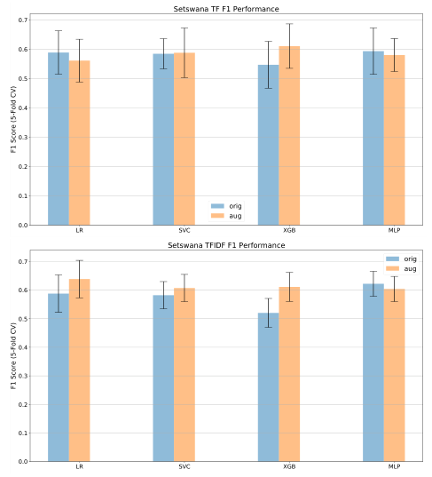
Figure 5: Baseline classification model performance for Setswana news title categorization
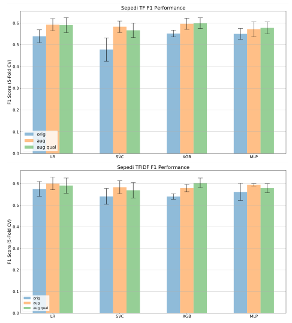
Figure 6: Baseline classification model performance for Sepedi news title categorization
4.1.2. Augmentation
We applied augmentation in different ways. First for Sepedi and Setswana word embeddings (word2vec), we use word embedding-based augmentation. We augment each dataset 20 times on the training data while the validation data is left intact so as to be comparable to the earlier baselines. We show the effect of augmentation in Figures 5 and 6 (performance labeled with aug).
The contextual, word2vec based, word augmentation improves the performance of most of the classifiers. If we now introduce a quality check using doc2vec (Algorithm 1) we also notice the impact on the performance for Sepedi (Figure 6 aug qual ). We were not able to complete experiments with Setswana for the contextual augmentation with a quality check, but will continue working to better under stand the impact of such an algorithm in general. For example, it remains further work to investigate the effects of different similarity thresholds for the algorithm on the overall performance, how such an algorithm works on highly resourced languages vs low resourced languages, how we can make the algorithm efficient etc.
It also interesting to look at how performance of classifiers that were only trained with word2vec features would fair. Deep neural networks are not used in this current work and as such we did not use recurrent neural networks, but we can create sentence features from - word2vec by either using: the mean of all word vectors in a sentence, the median of all word vectors in a sentence or the concatenated power means (Rücklé et al., 2018). We show the performance of using this approach with the classifiers used for Bag of Words and TFIDF earlier in Figure 7.
The performance for this approach is slightly worse with the best results for Sepedi news headline classification being with XGBoost on the augmented data. We hope to improve this performance using word2vec feature vectors using recurrent neural networks but currently are of the view that increasing the corpora sizes and the diversity of corpora for the pre-trained word embeddings may yield even better results.
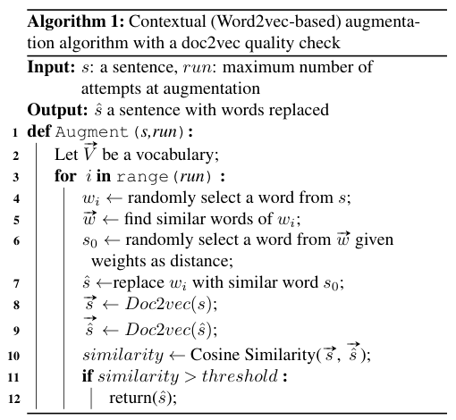
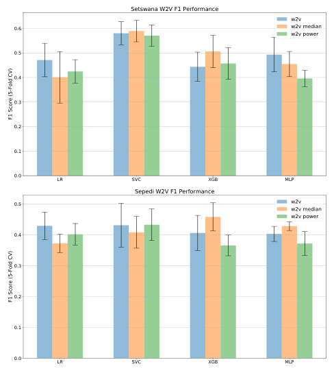
Figure 7: Word2Vec feature based performance for news headline classification
Finally, we show the confusion matrix of the best model in Sepedi on a test set in Figure 8. The classifier categorizes General News, Politics and Legal news headlines best. For others there is more error. A larger news headline dataset is required and classification performance will also need to be compared to models trained on full news data (with the article body). For the Setswana classifiers, the confusion matrix shows that the data skew results in models that mostly can categorize between categories General News and Other. We need to look at re-sampling techniques to improve this performance as well as increasing the initial dataset size.
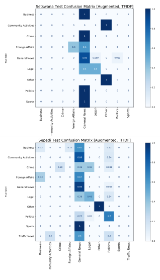
Figure 8: Confusion Matrix of News headline classification models
5. Conclusion and Future Work
This work introduced the collection and annotation of Setswana and Sepedi news headline data. It remains a challenge that in South Africa, 9 of the 11 official languages have little data such as this that is available to researchers in order to build downstream models that can be used in different applications. Through this work we hope to provide an example of what may be possible even when we have a limited annotated dataset. We exploit the availability of other free text data in Setswana and Sepedi in order to build pre-trained vectorizers for the languages (which are released as part of this work) and then train classification models for news categories.
It remains future work to collect more local language news headlines and text to train more models. We have identified other government news sources that can be used. On training embedding models with the data we have collected, further studies are needed to look at how augmentation using the embedding models improve the quality of augmentation.
Notes
1 http://groups.di.unipi.it/˜gulli
2 http://www.sabc.co.za/
3 www.sadilar.org
4 http://www.sabc.co.za/
5 https://www.facebook.com/MotswedingFM/
6 https://www.facebook.com/thobelafmyaka/
7 https://zenodo.org/record/3668495
6. Bibliographical References
Bojanowski, P., Grave, E., Joulin, A., and Mikolov, T. (2017). Enriching word vectors with subword information. Transactions of the Association for Computational Linguistics, 5:135-146.
Bureau of Circulations, A. (2019). Newspaper circulation statistics for the period January-March 2019 (ABC Q1 2019).
Cubuk, E. D., Zoph, B., Mane, D., Vasudevan, V., and Le, Q. V. (2019). Autoaugment: Learning augmentation strategies from data. In Proceedings of the IEEE conference on computer vision and pattern recognition, pages 113-123.
Johnson, M., Schuster, M., Le, Q. V., Krikun, M., Wu, Y., Chen, Z., Thorat, N., Viégas, F., Wattenberg, M., Corrado, G., et al. (2017). Google's multilingual neural machine translation system: Enabling zero-shot translation. Transactions of the Association for Computational Linguistics, 5:339-351.
Kobayashi, S. (2018). Contextual augmentation: Data augmentation by words with paradigmatic relations. In Proceedings of the 2018 Conference of the North American Chapter of the Association for Computational Linguistics: Human Language Technologies, Volume 2 (Short Papers), volume 2, pages 452-457.
Lewis, D. D. (1997). Reuters-21578 text categorization collection data set.
Marivate, V. and Sefara, T. (2019). Improving short text classification through global augmentation methods. arXiv preprint arXiv:1907.03752.
Marivate, V. and Sefara, T. (2020a). African embeddings [nlp]. https://doi.org/10.5281/zenodo.3668481, February.
Marivate, V. and Sefara, T. (2020b). South African news data dataset. https://doi.org/10.5281/zenodo.3668489.
Mikolov, T., Sutskever, I., Chen, K., Corrado, G. S., and Dean, J. (2013). Distributed representations of words and phrases and their compositionality. In Advances in neural information processing systems, pages 3111-3119.
Nettle, D. (1998). Explaining global patterns of language diversity. Journal of anthropological archaeology, 17(4):354-374.
Rücklé, A., Eger, S., Peyrard, M., and Gurevych, I. (2018). Concatenated power mean word embeddings as universal cross-lingual sentence representations. arXiv preprint arXiv:1803.01400.
Sandhaus, E. (2008). The new york times annotated corpus. Linguistic Data Consortium, Philadelphia, 6(12):e26752.
Silfverberg, M., Wiemerslage, A., Liu, L., and Mao, L. J. (2017). Data augmentation for morphological reinflection. In Proceedings of the CoNLL SIGMORPHON 2017 Shared Task: Universal Morphological Reinflection, pages 90-99.
Strassel, S. and Tracey, J. (2016). Lorelei language packs: Data, tools, and resources for technology development in low resource languages. In Proceedings of the Tenth International Conference on Language Resources and Evaluation (LREC'16), pages 3273-3280.
Wang, W. Y. and Yang, D. (2015). That's so annoying!!!: A lexical and frame-semantic embedding based data augmentation approach to automatic categorization of annoying behaviors using# petpeeve tweets. In Proceedings of the 2015 Conference on Empirical Methods in Natural Language Processing, pages 2557-2563.
Wei, J. and Zou, K. (2019). Eda: Easy data augmentation techniques for boosting performance on text classification tasks. In Proceedings of the 2019 Conference on Empirical Methods in Natural Language Processing and the 9th International Joint Conference on Natural Language Processing (EMNLP-IJCNLP), pages 6383-6389.
Yu, S., Yang, J., Liu, D., Li, R., Zhang, Y., and Zhao, S. (2019). Hierarchical data augmentation and the application in text classification. IEEE Access, 7:185476-185485.
Zhang, X., Zhao, J., and LeCun, Y. (2015). Character-level convolutional networks for text classification. In Advances in neural information processing systems, pages 649-657.
Zoph, B., Yuret, D., May, J., and Knight, K. (2016). Transfer learning for low-resource neural machine translation. arXiv preprint arXiv:1604.02201.
Investigating an Approach for Low Resource Language Dataset Creation, Curation and Classification: Setswana and Sepedi
Enquêter sur une approche pour la création, la curation et la classification de jeux de données de langues à ressources limitées : le Setswana et le Sepedi
Affiliations
Vukosi Marivate1,2, Tshephisho Sefara2, Vongani Chabalala3, Keamogetswe Makhaya4,
Tumisho Mokgonyane5, Rethabile Mokoena6, Abiodun Modupe7,1
University of Pretoria1, CSIR2, University of Zululand3, University of Cape Town4,
University of Limpopo5, North-West University6, University of the Witwatersrand7
,
Affiliations
Vukosi Marivate1,2, Tshephisho Sefara2, Vongani Chabalala3, Keamogetswe Makhaya4,
Tumisho Mokgonyane5, Rethabile Mokoena6, Abiodun Modupe7,1
University of Pretoria1, CSIR2, University of Zululand3, University of Cape Town4,
University of Limpopo5, North-West University6, University of the Witwatersrand7
,
Abstract
Résumé
The recent advances in Natural Language Processing have only been a boon for well represented languages, negating research in lesser known global languages. This is in part due to the availability of curated data and research resources. One of the current challenges concerning low-resourced languages are clear guidelines on the collection, curation and preparation of datasets for different use-cases. In this work, we take on the task of creating two datasets that are focused on news headlines (i.e short text) for Setswana and Sepedi and the creation of a news topic classification task from these datasets. In this study, we document our work, propose baselines for classification, and investigate an approach on data augmentation better suited to low-resourced languages in order to improve the performance of the classifiers.
Les récentes avancées en traitement automatique du langage naturel n'ont été bénéfiques que pour les langues bien représentées, négligeant ainsi la recherche sur les langues mondiales moins connues. Cela est en partie dû à la disponibilité de données et de ressources de recherche curatées. L’un des défis actuels concernant les langues à faibles ressources est de disposer de lignes directrices claires sur la collecte, la conservation et la préparation d’ensembles de données pour différents cas d’utilisation. Dans ce travail, nous abordons la tâche de créer deux ensembles de données axés sur les titres d'actualités (c'est-à-dire des textes courts) pour le Setswana et le Sepedi et la création d'une tâche de classification de sujets d'actualités à partir de ces ensembles de données. Dans cette étude, nous documentons notre travail, proposons des lignes de base pour la classification et étudions une approche sur l'augmentation des données mieux adaptée aux langages à faibles ressources afin d'améliorer les performances des classificateurs.
1. Introduction
1. Introduction
The most pressing issues with regard to low-resource languages are the lack of sufficient language resources, like features related to automation. In this study, we introduce an investigation of a low-resource language that provides automatic formulation and customisation of new capabilities from existing ones. While there are more than six thousand languages spoken globally, the availability of resources among each of those are extraordinarily unbalanced (Nettle, 1998). For example, if we focus on language resources annotated on the public domain, as of November 2019, AG corpus released about 496,835 news articles related to the English language from more than 200 sources. Additionally, the Reuters News Dataset (Lewis, 1997) comprise roughly 10,788 annotated texts from the Reuters financial newswire. Moreover, the New York Times Annotated Corpusholds over 1.8 million articles (Sandhaus, 2008). Lastly, Google Translate only supports around 100 languages (Johnson et al., 2017). significant amount of knowledge exists for only a small number of languages, neglecting 17% out of the world's language categories labelled as low-resource, and there are currently no standard annotated tokens in low-resource languages (Strassel and Tracey, 2016). This in turn, makes it challenging to develop various mechanisms and tools used for Natural Language Processing (NLP).
Les problèmes les plus pressants en ce qui concerne les langues à faibles ressources sont le manque de ressources linguistiques suffisantes, comme les fonctionnalités liées à l'automatisation. Dans cette étude, nous présentons une investigation d'une langue à ressources limitées qui permet la formulation et la personnalisation automatiques de nouvelles capacités à partir des capacités existantes. Bien qu'il y ait plus de six mille langues parlées dans le monde, la disponibilité des ressources pour chacune d'entre elles est extraordinairement déséquilibrée (Nettle, 1998). Par exemple, si nous nous concentrons sur les ressources linguistiques annotées dans le domaine public, en novembre 2019, AG corpus a publié environ 496 835 articles de presse liés à la langue anglaise provenant de plus de 200 sources. De plus, le Reuters News Dataset (Lewis, 1997) comprend environ 10 788 textes annotés provenant de l'agence de presse financière Reuters. De plus, le New York Times Annotated Corpus contient plus de 1,8 million d'articles (Sandhaus, 2008). Enfin, Google Translate ne prend en charge qu'environ 100 langues (Johnson et al., 2017). Il existe une quantité importante de connaissances pour seulement un petit nombre de langues, négligeant 17% des catégories de langues du monde étiquetées comme faibles ressources, et il n’existe actuellement aucun token annoté standard dans les langues à faibles ressources (Strassel et Tracey, 2016). Ceci, à son tour, rend difficile le développement de divers mécanismes et outils utilisés pour le traitement du langage naturel (NLP).
In South Africa, most of the news websites (private and public) are published in English, despite there being 11 official languages (including English). In this paper, we list the premium newspapers by circulation as per the first Quarter of 2019 (Bureau of Circulations, 2019) (Table 1). Currently, there is a lack of information surrounding 8 of the 11 official South African languages, with the exception of English, Afrikaans and isiZulu which contain most of the reported datasets. n this work, we aim to provide a general framework for two of the 11 South African languages, to create an annotated linguistic resource for Setswana and Sepedi news headlines. In this study, we applied data sources of the news headlines from the South African Broadcast Corporation (SABC), their social media streams and a few acoustic news. Unfortunately, at the time of this study, we did not have any direct access to news reports, and hopefully this study can promote collaboration between the national broadcaster and NLP researchers.
En Afrique du Sud, la plupart des sites d'information (privés et publics) sont publiés en anglais, malgré la présence de 11 langues officielles (dont l'anglais). Dans le présent document, nous dressons la liste des journaux premium selon leur tirage au premier trimestre de 2019 (Bureau of Circulations, 2019) (tableau 1). Actuellement, il y a un manque d'information autour de 8 des 11 langues officielles sud-africaines, à l'exception de l'anglais, de l'afrikaans et de l'isiZulu qui contiennent la plupart des ensembles de données rapportés. Dans ce travail, nous visons à fournir un cadre général pour deux des 11 langues sud-africaines, afin de créer une ressource linguistique annotée pour les titres d'actualité en setswana et en sepedi. Dans cette étude, nous avons appliqué des sources de données de titres de journaux de la South African Broadcast Corporation (SABC), leurs flux de médias sociaux et quelques actualités acoustiques. Malheureusement, au moment de cette étude, nous n'avions aucun accès direct aux reportages d'actualité, et nous espérons que cette étude pourra favoriser la collaboration entre le radiodiffuseur national et les chercheurs en TAL.
Table 1: Top newspapers in South Africa with their languages
Tableau 1 : Top journaux en Afrique du Sud avec leurs langues
The rest of the work is organized as follows. Section 2. discusses prior work that has gone into building local corpora in South Africa and how they have been used. Section 3. presents the proposed approach to build a local news corpora and annotating the corpora with categories. From here, we focus on ways to gather data for vectorization and building word embeddings (needing an expanded corpus). We also release and make pre-trained word embeddings for 2 local languages as part of this work (Marivate and Sefara, 2020a). Section 4. investigate building classification models for the Setswana and Sepedi news and improve those classifiers using a 2 step augmentation approach inspired by work on hierarchical language models (Yu et al., 2019). Finally, Section 5. concludes and proposes a path forward for this work.
Le reste du travail est organisé comme suit. Section 2. discute des travaux antérieurs consacrés à la construction de corpus locaux en Afrique du Sud et de la façon dont ils ont été utilisés. Section 3. présente l'approche proposée pour construire un corpus d'actualités locales et annoter le corpus avec des catégories. À partir de là, nous nous concentrons sur les moyens de rassembler des données pour la vectorisation et la construction d'embeddings de mots (nécessitant un corpus élargi). Nous publions également et mettons à disposition des embeddings de mots pré-entraînés pour 2 langues locales dans le cadre de ce travail (Marivate et Sefara, 2020a). Section 4. examine la construction de modèles de classification pour les actualités en Setswana et en Sepedi et améliore ces classificateurs en utilisant une approche d'augmentation en 2 étapes inspirée des travaux sur les modèles de langage hiérarchiques (Yu et al., 2019). Enfin, la section 5. conclut et propose une voie à suivre pour ce travail.
2. Prior Work
2. Travaux antérieurs
Creating sizeable language resources for low resource languages is important in improving available data for study (Zoph et al., 2016) and cultural preservation. Focusing on the African continent, we note that there are few annotated datasets that are openly available for Natural Language Processing tasks such as classification. In South Africa, the South African Center for Digital Language Resources (SADiLaR) has worked to curate datasets of local South African languages. There remain gaps such as accessing large corpora and data from sources such as broadcasters and news organizations as they have sizeable catalogs that are yet to make it into the public domain. In this work, we work to fill such a gap by collecting, annotating and training classifier models for news headlines in Setswana and Sepedi. As the data that we do find publicly is still small, we also have to deal with the challenges of Machine Learning on small data. Machine learning systems perform poorly in presence of small training sets due to overfitting. To avoid this problem, data augmentation can be used. The technique is well known in the field of image processing (Cubuk et al., 2019). Data augmentation refers to the augmentation of the training set with artificial, generated, training examples. This technique is used less frequently in NLP but a number of few studies applied data augmentation.
La création de ressources linguistiques importantes pour les langues peu dotées est cruciale pour améliorer les données disponibles pour l'étude (Zoph et al., 2016) et la préservation culturelle. En se concentrant sur le continent africain, nous notons qu'il existe peu de jeux de données annotés qui sont ouvertement disponibles pour les tâches de traitement du langage naturel telles que la classification. En Afrique du Sud, le South African Center for Digital Language Resources (SADiLaR) a travaillé à la conservation de jeux de données de langues sud-africaines locales. Il reste des lacunes, comme l’accès à de grands corpus et à des données provenant de sources telles que les radiodiffuseurs et les organismes de presse, car ils ont des catalogues importants qui doivent encore entrer dans le domaine public. Dans ce travail, nous nous efforçons de combler une telle lacune en collectant, en annotant et en entraînant des modèles de classifieurs pour les titres d'actualité en setswana et en sepedi. Comme les données que nous trouvons publiquement sont encore petites, nous devons également faire face aux défis de l'apprentissage automatique sur de petites données. Les systèmes d'apprentissage automatique obtiennent de mauvais résultats en présence de petits ensembles d'entraînement en raison du surapprentissage. Pour éviter ce problème, l'augmentation des données peut être utilisée. La technique est bien connue dans le domaine du traitement d'image (Cubuk et al., 2019). L'augmentation de données désigne l'enrichissement de l'ensemble d'entraînement avec des exemples d'entraînement artificiels et générés. Cette technique est moins fréquemment utilisée en TAL, mais un certain nombre d'études ont appliqué l'augmentation de données.
Silfverberg et al. (2017) use data augmentation to counteract overfitting where recurrent neural network (RNN) Encoder-Decoder is implemented specifically geared toward a low-resource setting. Authors apply data augmentation by finding words that share word stem for example fizzle and fizzling share fizzl. Then authors replace a stem with another string.
Silfverberg et al. (2017) utilisent l'augmentation de données pour contrer le surapprentissage où un Encoder-Decoder de réseau de neurones récurrents (RNN) est mis en œuvre spécifiquement adapté à un contexte de faible ressource. Les auteurs appliquent l'augmentation de données en trouvant des mots qui partagent un radical, par exemple fizzle et fizzling partagent fizzl. Ensuite, les auteurs remplacent un radical par une autre chaîne de caractères.
Zhang et al. (2015) apply data augmentation by using synonyms as substitute words for the original words. However, Kobayashi (2018) states that synonyms are very limited and the synonym-based augmentation cannot produce numerous different patterns from the original texts. Hence, Kobayashi (2018) proposes contextual data augmentation by replacing words that are predicted by a language model given the context surrounding the original words to be augmented.
Zhang et al. (2015) appliquent l'augmentation de données en utilisant des synonymes comme mots de substitution pour les mots originaux. Cependant, Kobayashi (2018) affirme que les synonymes sont très limités et que l’augmentation basée sur les synonymes ne peut pas produire de nombreux modèles différents des textes originaux. Par conséquent, Kobayashi (2018) propose une augmentation des données contextuelles en remplaçant les mots prédits par un modèle de langage compte tenu du contexte entourant les mots originaux à augmenter.
As Wei and Zou (2019) states that these techniques are valid, they are not often used in practice because they have a high cost of implementation relative to performance gain. They propose an easy data augmentation as techniques for boosting performance on text classification tasks. These techniques involve synonym replacement, random insertion, random swap, and random deletion of a word. Authors observed good performance when using fraction of the dataset (%):1, 5, 10, 20, 30, 40, 50, 60, 70, 80, 90,100, as the data size increases, the accuracy also increases for augmented and original data. Original data obtained highest accuracy of 88.3% at 100% data size while augmented data obtained accuracy of 88.6% at 50% data size.
Comme le déclare Wei et Zou (2019), ces techniques sont valides, elles ne sont cependant pas souvent utilisées en pratique car elles ont un coût de mise en œuvre élevé par rapport au gain de performance. Ils proposent une augmentation facile des données comme techniques pour augmenter les performances sur les tâches de classification de texte. Ces techniques impliquent le remplacement par des synonymes, l'insertion aléatoire, l'échange aléatoire et la suppression aléatoire d'un mot. Les auteurs ont observé de bonnes performances lors de l'utilisation d'une fraction du jeu de données (%) : 1, 5, 10, 20, 30, 40, 50, 60, 70, 80, 90, 100. À mesure que la taille des données augmente, la précision augmente également pour les données augmentées et originales. Les données originales ont obtenu la plus grande précision de 88,3% à 100% de la taille des données tandis que les données augmentées ont obtenu une précision de 88,6% à 50% de la taille des données.
3. Developing news classification models for Setswana and Sepedi
3. Élaboration de modèles de classification des nouvelles pour Setswana et Sepedi
In this work, we investigate the development of a 2 step text augmentation method in order to be improve classification models for Setswana and Sepedi. To do this we had to first identify a suitable data source. Collect the data, and then annotate the datasets with news categories. After the data is collected and annotated, we then worked to create classification models from the data as is and then use a word embedding and document embedding augmentation approach. In this section discuss how data was collected as well as the approach we use to build classification models.
Dans ce travail, nous étudions le développement d'une méthode d'augmentation de texte en 2 étapes afin d'améliorer les modèles de classification pour Setswana et Sepedi. Pour ce faire, nous avons d'abord dû identifier une source de données appropriée. Collecter les données, puis annoter les jeux de données avec des catégories d'actualités. Après la collecte et l'annotation des données, nous avons ensuite travaillé à créer des modèles de classification à partir des données telles quelles, puis utiliser une approche d'augmentation par embedding de mots et d'embedding de documents. Dans cette section, nous discutons de la manière dont les données ont été collectées ainsi que de l'approche utilisée pour construire des modèles de classification.
3.1. Data Collection, Cleaning and Annotation
3.1. Collecte de données, nettoyage et annotation
Before we can train classification models, we first have to collect data for 2 distinct processes. First, we present our collected news dataset as well as its annotation. We then discuss how we collected larger datasets for better vectorisation.
Avant de pouvoir entraîner des modèles de classification, nous devons d'abord collecter des données pour 2 processus distincts. Tout d'abord, nous présentons notre ensemble de données de nouvelles collectées ainsi que son annotation. Nous discutons ensuite de la façon dont nous avons collecté de plus grands ensembles de données pour une meilleure vectorisation.
3.1.1. News data collection and annotation
3.1.1. Collecte et annotation de données d'actualités
The news data we collected is from the SABC Facebook pages. The SABC is the public broadcaster for South Africa. Specifically, data was collected from Motsweding FM (An SABC Setswana radio station) and Thobela FM (An SABC Sepedi radio station). We scraped the news headlines that are published as posts on both Facebook pages. We claim no copyright for the content but used the data for research purposes. We summarize the datasets in Table 2. We visualize the token distributions in Setswana and Sepedi in Figures 1 and 2 respectively.
Les données d'actualités que nous avons collectées proviennent des pages Facebook de la SABC. La SABC est le diffuseur public pour l'Afrique du Sud. Plus précisément, les données ont été collectées à partir de Motsweding FM (une station de radio setswana de la SABC) et Thobela FM (une station de radio sepedi de la SABC). Nous avons extrait les titres d'actualités publiés sous forme de publications sur les deux pages Facebook. Nous ne revendiquons aucun droit d'auteur sur le contenu, mais avons utilisé les données à des fins de recherche. Nous résumons les ensembles de données dans le Tableau 2. Nous visualisons les distributions de tokens en Setswana et en Sepedi dans les Figures 1 et 2 respectivement.
Table 2: News Data Sets
Tableau 2 : Ensembles de données d'actualités
Figure 1: Setswana Wordcloud
Figure 1 : Nuage de mots en Setswana
Figure 2: Sepedi Wordcloud
Figure 2 : Nuage de mots Sepedi
As can be seen, the datasets are relatively small and as such, we have to look at other ways to build vectorizers that can better generalize as the word token diversity would be very low.
Comme on peut le voir, les ensembles de données sont relativement petits et, en tant que tels, nous devons chercher d'autres façons de construire des vectorisateurs qui peuvent mieux généraliser car la diversité des jetons de mots serait très faible.
We annotated the datasets by categorizing the news headlines into: Legal, General News,Sports, Other, Politics, Traffic News, Community Activities, Crime, Business and Foreign Affairs. Annotation was done after reading the headlines and coming up with categories that fit both datasets. We show the distribution of the labels in both the Setswana and Sepedi data sets in Figures 3 and 4 respectively. For this work, we only explore single label categorization for each article. It remains future work to look at the multi-label case. As such, there might be some noise in the labels. Examples from the Sepedi annotated news corpus are shown next:
Nous avons annoté les ensembles de données en catégorisant les titres de l'actualité en: juridique, nouvelles générales, sports, autres, politique, nouvelles de la circulation, activités communautaires, criminalité, affaires et affaires étrangères. L'annotation a été faite après avoir lu les titres et trouvé des catégories qui correspondent aux deux ensembles de données. Nous montrons la distribution des étiquettes dans les ensembles de données Setswana et Sepedi dans les figures 3 et 4 respectivement. Pour ce travail, nous n’explorons que la catégorisation par étiquette unique pour chaque article. Il reste encore du travail à faire pour examiner le cas multilabel. Par conséquent, il peut y avoir du bruit dans les étiquettes. Des exemples du corpus de nouvelles annoté en Sepedi sont présentés ci-dessous :
Tsela ya N1 ka Borwa kgauswi le Mantsole Weighbridge ka mo Limpopo ebe e tswaletswe lebakanyana ka morago ga kotsi yeo e hlagilego. Traffic
Tona ya toka Michael Masutha,ore bahlankedi ba kgoro ya ditirelo tsa tshokollo ya bagolegwa bao ba tateditswego dithieeletsong tsa khomisene ya go nyakisisa mabarebare a go gogwa ga mmuso ka nko,ba swanetse go hlalosa gore ke ka lebaka la eng ba sa swanelwa go fegwa mesomong Legal
The full dataset is made available online (Marivate and Sefara, 2020b) for further research use and improvements to the annotation. As previously discussed, we used larger corpora to create language vectorizers for downstream NLP tasks. We discuss this next.
L’ensemble de données complet est disponible en ligne (Marivate et Sefara, 2020b) pour une utilisation ultérieure en recherche et des améliorations à l’annotation. Comme discuté précédemment, nous avons utilisé des corpus plus grands pour créer des vectorisateurs de langage pour les tâches NLP en aval. Nous discutons de cela ci-dessous.
3.1.2. Vectorizers
3.1.2. Vectoriseurs
Before we get into the annotated dataset, we needed to create pre-trained vectorizers in order to be able to build more classifiers that generalize better later on. For this reason we collected different corpora for each language in such as way that we could create Bag of Words, TFIDF, Word2vec (Mikolov et al., 2013) and FastText (Bojanowski et al., 2017) vectorizers (Table 3). We also make these vectorizers available for other researchers to use.
Avant d'aborder le jeu de données annoté, nous devions créer des vectoriseurs pré-entraînés afin de pouvoir construire ultérieurement des classificateurs plus généralisables. Pour cette raison, nous avons collecté différents corpus pour chaque langue de manière à pouvoir créer des vectoriseurs de type sac de mots, TFIDF, word2vec (Mikolov et al., 2013) et fastText (Bojanowski et al., 2017) (Tableau 3). Nous mettons également ces vectoriseurs à la disposition des autres chercheurs pour qu'ils puissent les utiliser.
Figure 3: Setswana news title category distribution
Figure 3 : Distribution des catégories de titres d'actualités en Setswana
Figure 4: Sepedi news title category distribution
Figure 4 : Distribution des catégories de titres d'actualités en Sepedi
Table 3: Vectorizer Corpora Sizes in number of lines (number of tokens)
Tableau 3 : Tailles des corpus de vectorisation en nombre de lignes (nombre de jetons)
3.2. News Classification Models
3.2 Modèles de classification des nouvelles
We explore the use of a few classification algorithms to train news classification models. Specifically we train Logistic Regression, Support Vector Classification, XGBoost, and MLP Neural Network.
Nous explorons l'utilisation de quelques algorithmes de classification pour entraîner des modèles de classification d'actualités. Nous entraînons spécifiquement la Régression Logistique, la Classification par Machine à Vecteurs de Support, XGBoost, et le Réseau de Neurones MLP.
To deal with the challenge of having a small amount of data on short text, we use data augmentation methods, specifically a word embedding based augmentation (Wang and Yang, 2015), approach that has been shown to work well on short text (Marivate and Sefara, 2019). We use this approach since we are not able to use other augmentation methods such as synonym based (requires developed Wordnet Synsets (Kobayashi, 2018)), language models (larger corpora needed train) and back-translation (not readily available for South African languages). We develop and present the use of both word and document embeddings (as an augmentation quality check) inspired by a hierarchical approach to augmentation (Yu et al., 2019).
Pour relever le défi de la faible quantité de données sur les textes courts, nous utilisons des méthodes d'augmentation de données, spécifiquement une approche d'augmentation basée sur les embeddings de mots (Wang et Yang, 2015), qui a démontré son efficacité sur les textes courts (Marivate et Sefara, 2019). Nous utilisons cette approche car nous ne pouvons pas utiliser d'autres méthodes d'augmentation telles que celles basées sur les synonymes (nécessite des synsets WordNet développés (Kobayashi, 2018)), les modèles de langage (des corpus plus grands sont nécessaires pour l'entraînement) et la rétrotraduction (pas facilement disponible pour les langues sud-africaines). Nous développons et présentons l'utilisation d'embeddings de mots et de documents (en tant que vérification de la qualité de l'augmentation) inspirée d'une approche hiérarchique de l'augmentation (Yu et al., 2019).
4. Experiments and Results
4. Expériences et résultats
This Section presents the experiments and results. As this is still work in progress, we present some avenues explored in both training classifiers and evaluating them for the task of news headline classification for Setswana and Sepedi.
Cette section présente les expériences et les résultats. Comme il s'agit encore d'un travail en cours, nous présentons certaines pistes explorées tant dans l'entraînement des classifieurs que dans leur évaluation pour la tâche de classification de titres d'actualités pour le Setswana et le Sepedi.
4.1. Experimental Setup
4.1. Configuration expérimentale
For each classification problem, we perform 5 fold cross validation. For the bag-of-words and TFIDF vectorizers, we use a maximum token size of 20,000. For word embeddings and language embeddings we use size 50. All vectorizers were trained on the large corpora presented earlier.
Pour chaque problème de classification, nous effectuons une validation croisée 5 fois. Pour le sac de mots et les vectorisateurs TFIDF, nous utilisons une taille de jeton maximale de 20 000. Pour les embeddings de mots et les embeddings de langue, nous utilisons une taille de 50. Tous les vectorisateurs ont été entraînés sur les grands corpus présentés précédemment.
4.1.1. Baseline Experiments
4.1.1 Expériences de base
We run the baseline experiments with the original data using 5-fold cross validation. We show the performance (in terms of weighted F1 score) in the Figures 5 and 6. We show the baseline results as orig. For both the Bag-of-Words (TF) and TFIDF, the MLP performs very well comparatively to the other methods. In general the TFIDF performs better.
Nous effectuons les expériences de base avec les données originales en utilisant une validation croisée à 5 fois. Nous montrons la performance (en termes de score pondéré F1) dans les figures 5 et 6. Nous montrons les résultats de base comme orig. Pour les deux méthodes Bag-of-Words (TF) et TFIDF, le MLP fonctionne très bien comparativement aux autres méthodes. En général, le TFIDF fonctionne mieux.
Figure 5: Baseline classification model performance for Setswana news title categorization
Figure 5 : Performance du modèle de classification de base pour la catégorisation des titres d'actualités en Setswana
Figure 6: Baseline classification model performance for Sepedi news title categorization
Figure 6 : Performance du modèle de classification de base pour la catégorisation des titres d'actualités en Sepedi
4.1.2. Augmentation
4.1.2. Augmentation
We applied augmentation in different ways. First for Sepedi and Setswana word embeddings (word2vec), we use word embedding-based augmentation. We augment each dataset 20 times on the training data while the validation data is left intact so as to be comparable to the earlier baselines. We show the effect of augmentation in Figures 5 and 6 (performance labeled with aug).
Nous avons appliqué l'augmentation de différentes manières. Tout d'abord pour les embeddings de mots Sepedi et Setswana (word2vec), nous utilisons une augmentation basée sur les embeddings de mots. Nous augmentons chaque ensemble de données 20 fois sur les données d'entraînement tandis que les données de validation sont laissées intactes afin d'être comparables aux lignes de base précédentes. Nous montrons l'effet de l'augmentation dans les figures 5 et 6 (performance étiquetée avec aug).
The contextual, word2vec based, word augmentation improves the performance of most of the classifiers. If we now introduce a quality check using doc2vec (Algorithm 1) we also notice the impact on the performance for Sepedi (Figure 6 aug qual ). We were not able to complete experiments with Setswana for the contextual augmentation with a quality check, but will continue working to better under stand the impact of such an algorithm in general. For example, it remains further work to investigate the effects of different similarity thresholds for the algorithm on the overall performance, how such an algorithm works on highly resourced languages vs low resourced languages, how we can make the algorithm efficient etc.
L'augmentation contextuelle des mots, basée sur word2vec, améliore les performances de la plupart des classificateurs. Si nous introduisons maintenant un contrôle de qualité utilisant doc2vec (Algorithme 1), nous remarquons également l'impact sur les performances pour le Sepedi (Figure 6 aug qual). Nous n'avons pas pu compléter les expériences avec le Setswana pour l'augmentation contextuelle avec un contrôle de qualité, mais nous continuerons à travailler pour mieux comprendre l'impact d'un tel algorithme en général. Par exemple, il reste encore du travail pour étudier les effets de différents seuils de similarité pour l'algorithme sur la performance globale, comment un tel algorithme fonctionne sur les langages à ressources élevées par rapport aux langages à faibles ressources, comment nous pouvons rendre l'algorithme efficace, etc.
It also interesting to look at how performance of classifiers that were only trained with word2vec features would fair. Deep neural networks are not used in this current work and as such we did not use recurrent neural networks, but we can create sentence features from - word2vec by either using: the mean of all word vectors in a sentence, the median of all word vectors in a sentence or the concatenated power means (Rücklé et al., 2018). We show the performance of using this approach with the classifiers used for Bag of Words and TFIDF earlier in Figure 7.
Il est également intéressant d'examiner comment les performances des classificateurs qui n'ont été entraînés qu'avec des caractéristiques word2vec se comporteraient. Les réseaux de neurones artificiels profonds ne sont pas utilisés dans ce travail actuel et, par conséquent, nous n'avons pas utilisé de réseaux de neurones récurrents, mais nous pouvons créer des caractéristiques de phrase à partir de word2vec en utilisant soit : la moyenne de tous les vecteurs de mots dans une phrase, la médiane de tous les vecteurs de mots dans une phrase ou les moyennes de puissance concaténées (Rücklé et al., 2018). Nous montrons la performance de l'utilisation de cette approche avec les classificateurs utilisés pour Bag of Words et TFIDF plus tôt dans la Figure 7.
The performance for this approach is slightly worse with the best results for Sepedi news headline classification being with XGBoost on the augmented data. We hope to improve this performance using word2vec feature vectors using recurrent neural networks but currently are of the view that increasing the corpora sizes and the diversity of corpora for the pre-trained word embeddings may yield even better results.
Les performances de cette approche sont légèrement moins bonnes, les meilleurs résultats pour la classification des titres d'actualité en Sepedi étant obtenus avec XGBoost sur les données augmentées. Nous espérons améliorer cette performance en utilisant des vecteurs de caractéristiques word2vec avec des réseaux de neurones récurrents, mais nous pensons actuellement que l'augmentation de la taille des corpus et de la diversité des corpus pour les plongements lexicaux pré-entraînés pourrait donner des résultats encore meilleurs.
Figure 7: Word2Vec feature based performance for news headline classification
Figure 7 : Performance basée sur les caractéristiques Word2Vec pour la classification de titres d'actualités
Finally, we show the confusion matrix of the best model in Sepedi on a test set in Figure 8. The classifier categorizes General News, Politics and Legal news headlines best. For others there is more error. A larger news headline dataset is required and classification performance will also need to be compared to models trained on full news data (with the article body). For the Setswana classifiers, the confusion matrix shows that the data skew results in models that mostly can categorize between categories General News and Other. We need to look at re-sampling techniques to improve this performance as well as increasing the initial dataset size.
Enfin, nous présentons la matrice de confusion du meilleur modèle en Sepedi sur un ensemble de test dans la Figure 8. Le classificateur catégorise le mieux les titres d'actualités Générales, Politiques et Juridiques. Pour d'autres, il y a plus d'erreur. Un plus grand ensemble de données de titres d'actualités est nécessaire et la performance de classification devra également être comparée à celle des modèles entraînés sur des données d'actualités complètes (avec le corps de l'article). Pour les classificateurs Setswana, la matrice de confusion montre que le biais des données entraîne des modèles qui peuvent principalement catégoriser entre les catégories Actualités Générales et Autres. Nous devons examiner les techniques de ré-échantillonnage pour améliorer cette performance ainsi que l'augmentation de la taille initiale de l'ensemble de données.
Figure 8: Confusion Matrix of News headline classification models
Figure 8 : Matrice de confusion des modèles de classification de titres d'actualités
5. Conclusion and Future Work
5. Conclusion et travaux futurs
This work introduced the collection and annotation of Setswana and Sepedi news headline data. It remains a challenge that in South Africa, 9 of the 11 official languages have little data such as this that is available to researchers in order to build downstream models that can be used in different applications. Through this work we hope to provide an example of what may be possible even when we have a limited annotated dataset. We exploit the availability of other free text data in Setswana and Sepedi in order to build pre-trained vectorizers for the languages (which are released as part of this work) and then train classification models for news categories.
Ce travail a introduit la collecte et l'annotation de données de titres de nouvelles en Setswana et Sepedi. Il reste un défi que, en Afrique du Sud, 9 des 11 langues officielles disposent de peu de données comme celles-ci disponibles pour les chercheurs afin de construire des modèles en aval qui peuvent être utilisés dans différentes applications. Grâce à ce travail, nous espérons fournir un exemple de ce qui peut être possible même lorsque nous avons un ensemble de données annoté limité. Nous exploitons la disponibilité d'autres données de texte libre en Setswana et Sepedi afin de construire des vectorisateurs pré-entraînés pour les langues (qui sont publiés dans le cadre de ce travail) et ensuite entraîner des modèles de classification pour les catégories d'actualités.
It remains future work to collect more local language news headlines and text to train more models. We have identified other government news sources that can be used. On training embedding models with the data we have collected, further studies are needed to look at how augmentation using the embedding models improve the quality of augmentation.
Il reste un travail futur pour collecter plus de titres et de textes d'actualités en langues locales afin d'entraîner davantage de modèles. Nous avons identifié d'autres sources d'actualités gouvernementales qui peuvent être utilisées. Sur l'entraînement de modèles de plongement lexical avec les données que nous avons collectées, d'autres études sont nécessaires pour examiner comment l'augmentation à l'aide des modèles de plongement lexical améliore la qualité de l'augmentation.
Notes
Notes
1 http://groups.di.unipi.it/˜gulli
2 http://www.sabc.co.za/
3 www.sadilar.org
4 http://www.sabc.co.za/
5 https://www.facebook.com/MotswedingFM/
6 https://www.facebook.com/thobelafmyaka/
7 https://zenodo.org/record/3668495
6. Bibliographical References
6. Références bibliographiques
Bojanowski, P., Grave, E., Joulin, A., and Mikolov, T. (2017). Enriching word vectors with subword information. Transactions of the Association for Computational Linguistics, 5:135-146.
Bureau of Circulations, A. (2019). Newspaper circulation statistics for the period January-March 2019 (ABC Q1 2019).
Cubuk, E. D., Zoph, B., Mane, D., Vasudevan, V., and Le, Q. V. (2019). Autoaugment: Learning augmentation strategies from data. In Proceedings of the IEEE conference on computer vision and pattern recognition, pages 113-123.
Johnson, M., Schuster, M., Le, Q. V., Krikun, M., Wu, Y., Chen, Z., Thorat, N., Viégas, F., Wattenberg, M., Corrado, G., et al. (2017). Google's multilingual neural machine translation system: Enabling zero-shot translation. Transactions of the Association for Computational Linguistics, 5:339-351.
Kobayashi, S. (2018). Contextual augmentation: Data augmentation by words with paradigmatic relations. In Proceedings of the 2018 Conference of the North American Chapter of the Association for Computational Linguistics: Human Language Technologies, Volume 2 (Short Papers), volume 2, pages 452-457.
Lewis, D. D. (1997). Reuters-21578 text categorization collection data set.
Marivate, V. and Sefara, T. (2019). Improving short text classification through global augmentation methods. arXiv preprint arXiv:1907.03752.
Marivate, V. and Sefara, T. (2020a). African embeddings [nlp]. https://doi.org/10.5281/zenodo.3668481, February.
Marivate, V. and Sefara, T. (2020b). South African news data dataset. https://doi.org/10.5281/zenodo.3668489.
Mikolov, T., Sutskever, I., Chen, K., Corrado, G. S., and Dean, J. (2013). Distributed representations of words and phrases and their compositionality. In Advances in neural information processing systems, pages 3111-3119.
Nettle, D. (1998). Explaining global patterns of language diversity. Journal of anthropological archaeology, 17(4):354-374.
Rücklé, A., Eger, S., Peyrard, M., and Gurevych, I. (2018). Concatenated power mean word embeddings as universal cross-lingual sentence representations. arXiv preprint arXiv:1803.01400.
Sandhaus, E. (2008). The new york times annotated corpus. Linguistic Data Consortium, Philadelphia, 6(12):e26752.
Silfverberg, M., Wiemerslage, A., Liu, L., and Mao, L. J. (2017). Data augmentation for morphological reinflection. In Proceedings of the CoNLL SIGMORPHON 2017 Shared Task: Universal Morphological Reinflection, pages 90-99.
Strassel, S. and Tracey, J. (2016). Lorelei language packs: Data, tools, and resources for technology development in low resource languages. In Proceedings of the Tenth International Conference on Language Resources and Evaluation (LREC'16), pages 3273-3280.
Wang, W. Y. and Yang, D. (2015). That's so annoying!!!: A lexical and frame-semantic embedding based data augmentation approach to automatic categorization of annoying behaviors using# petpeeve tweets. In Proceedings of the 2015 Conference on Empirical Methods in Natural Language Processing, pages 2557-2563.
Wei, J. and Zou, K. (2019). Eda: Easy data augmentation techniques for boosting performance on text classification tasks. In Proceedings of the 2019 Conference on Empirical Methods in Natural Language Processing and the 9th International Joint Conference on Natural Language Processing (EMNLP-IJCNLP), pages 6383-6389.
Yu, S., Yang, J., Liu, D., Li, R., Zhang, Y., and Zhao, S. (2019). Hierarchical data augmentation and the application in text classification. IEEE Access, 7:185476-185485.
Zhang, X., Zhao, J., and LeCun, Y. (2015). Character-level convolutional networks for text classification. In Advances in neural information processing systems, pages 649-657.
Zoph, B., Yuret, D., May, J., and Knight, K. (2016). Transfer learning for low-resource neural machine translation. arXiv preprint arXiv:1604.02201.
Investigating an Approach for Low Resource Language Dataset Creation, Curation and Classification: Setswana and Sepedi
Kuchunguza mbinu ya uundaji, uratibu na uainishaji wa seti ya data ya lugha yenye rasilimali chache: Setswana na Sepedi
Affiliations
Vukosi Marivate1,2, Tshephisho Sefara2, Vongani Chabalala3, Keamogetswe Makhaya4,
Tumisho Mokgonyane5, Rethabile Mokoena6, Abiodun Modupe7,1
University of Pretoria1, CSIR2, University of Zululand3, University of Cape Town4,
University of Limpopo5, North-West University6, University of the Witwatersrand7
,
Taasisi
Vukosi Marivate1,2, Tshephisho Sefara2, Vongani Chabalala3, Keamogetswe Makhaya4,
Tumisho Mokgonyane5, Rethabile Mokoena6, Abiodun Modupe7,1
University of Pretoria1, CSIR2, University of Zululand3, University of Cape Town4,
University of Limpopo5, North-West University6, University of the Witwatersrand7
,
Abstract
Muhtasari
The recent advances in Natural Language Processing have only been a boon for well represented languages, negating research in lesser known global languages. This is in part due to the availability of curated data and research resources. One of the current challenges concerning low-resourced languages are clear guidelines on the collection, curation and preparation of datasets for different use-cases. In this work, we take on the task of creating two datasets that are focused on news headlines (i.e short text) for Setswana and Sepedi and the creation of a news topic classification task from these datasets. In this study, we document our work, propose baselines for classification, and investigate an approach on data augmentation better suited to low-resourced languages in order to improve the performance of the classifiers.
Maendeleo ya hivi karibuni katika Uchakataji wa Lugha Asilia yamekuwa neema tu kwa lugha zinazowakilishwa vizuri, ikipuuza utafiti katika lugha za kimataifa zisizojulikana sana. Hii ni kwa sehemu kutokana na upatikanaji wa data iliyohifadhiwa na rasilimali za utafiti. Moja ya changamoto za sasa kuhusu lugha zenye rasilimali chache ni miongozo iliyo wazi juu ya ukusanyaji, uratibu na utayarishaji wa seti za data kwa matumizi tofauti. Katika kazi hii, tunachukua jukumu la kuunda seti mbili za data ambazo zinalenga kwenye vichwa vya habari (yaani maandishi mafupi) kwa Setswana na Sepedi na uundaji wa kazi ya uainishaji wa mada za habari kutoka kwa seti hizi za data. Katika utafiti huu, tunaandika kazi yetu, tunapendekeza misingi ya uainishaji, na kuchunguza mbinu ya Ujalizaji data inayofaa zaidi kwa lugha zenye rasilimali chache ili kuboresha utendaji wa viainishaji.
1. Introduction
1. Utangulizi
The most pressing issues with regard to low-resource languages are the lack of sufficient language resources, like features related to automation. In this study, we introduce an investigation of a low-resource language that provides automatic formulation and customisation of new capabilities from existing ones. While there are more than six thousand languages spoken globally, the availability of resources among each of those are extraordinarily unbalanced (Nettle, 1998). For example, if we focus on language resources annotated on the public domain, as of November 2019, AG corpus released about 496,835 news articles related to the English language from more than 200 sources. Additionally, the Reuters News Dataset (Lewis, 1997) comprise roughly 10,788 annotated texts from the Reuters financial newswire. Moreover, the New York Times Annotated Corpusholds over 1.8 million articles (Sandhaus, 2008). Lastly, Google Translate only supports around 100 languages (Johnson et al., 2017). significant amount of knowledge exists for only a small number of languages, neglecting 17% out of the world's language categories labelled as low-resource, and there are currently no standard annotated tokens in low-resource languages (Strassel and Tracey, 2016). This in turn, makes it challenging to develop various mechanisms and tools used for Natural Language Processing (NLP).
Masuala yanayosumbua zaidi kuhusu lugha zenye rasilimali chache ni ukosefu wa rasilimali za lugha za kutosha, kama vile vipengele vinavyohusiana na otomatiki. Katika utafiti huu, tunatanguliza uchunguzi wa lugha yenye rasilimali chache ambao hutoa uundaji otomatiki na ubinafsishaji wa uwezo mpya kutoka kwa zilizopo. Ingawa kuna zaidi ya lugha elfu sita zinazozungumzwa duniani kote, upatikanaji wa rasilimali kati ya kila moja ya hizo hauna usawa wa kushangaza (Nettle, 1998). Kwa mfano, ikiwa tutazingatia rasilimali za lugha zilizofafanuliwa kwenye kikoa cha umma, kufikia Novemba 2019, AG corpus ilitoa takriban makala ya habari 496,835 yanayohusiana na lugha ya Kiingereza kutoka vyanzo zaidi ya 200. Zaidi ya hayo, Reuters News Dataset (Lewis, 1997) inajumuisha takriban maandishi 10,788 yaliyofafanuliwa kutoka kwa wakala wa habari wa kifedha wa Reuters. Aidha, New York Times Annotated Corpus ina zaidi ya makala milioni 1.8 (Sandhaus, 2008). Mwishowe, Google Translate inasaidia takriban lugha 100 pekee (Johnson et al., 2017). kiasi kikubwa cha maarifa kipo kwa idadi ndogo tu ya lugha, ikipuuza 17% ya kategoria za lugha za dunia zilizotambulishwa kama lugha yenye rasilimali chache, na kwa sasa hakuna tokeni sanifu zilizofafanuliwa katika lugha yenye rasilimali chache (Strassel and Tracey, 2016). Hii kwa upande wake, inafanya iwe changamoto kuendeleza mbinu na zana mbalimbali zinazotumika kwa Uchakataji wa Lugha Asilia (NLP).
In South Africa, most of the news websites (private and public) are published in English, despite there being 11 official languages (including English). In this paper, we list the premium newspapers by circulation as per the first Quarter of 2019 (Bureau of Circulations, 2019) (Table 1). Currently, there is a lack of information surrounding 8 of the 11 official South African languages, with the exception of English, Afrikaans and isiZulu which contain most of the reported datasets. n this work, we aim to provide a general framework for two of the 11 South African languages, to create an annotated linguistic resource for Setswana and Sepedi news headlines. In this study, we applied data sources of the news headlines from the South African Broadcast Corporation (SABC), their social media streams and a few acoustic news. Unfortunately, at the time of this study, we did not have any direct access to news reports, and hopefully this study can promote collaboration between the national broadcaster and NLP researchers.
Nchini Afrika Kusini, tovuti nyingi za habari (za kibinafsi na za umma) huchapishwa kwa Kiingereza, licha ya kuwa kuna lugha rasmi 11 (ikiwemo Kiingereza). Katika makala haya, tunaorodhesha magazeti ya kwanza kulingana na mzunguko wa usambazaji kufikia Robo ya kwanza ya 2019 (Bureau of Circulations, 2019) (Jedwali la 1). Kwa sasa, kuna ukosefu wa taarifa kuhusu lugha 8 kati ya 11 rasmi za Afrika Kusini, isipokuwa Kiingereza, Kiafrikana na Kizulu ambazo zina seti nyingi za data zilizoripotiwa. Katika kazi hii, tunalenga kutoa mfumo wa jumla kwa lugha mbili kati ya 11 za Afrika Kusini, ili kuunda rasilimali ya kiisimu iliyo na maelezo kwa vichwa vya habari vya Setswana na Sepedi. Katika utafiti huu, tulitumia vyanzo vya data vya vichwa vya habari kutoka Shirika la Utangazaji la Afrika Kusini (SABC), mitiririko yao ya mitandao ya kijamii na habari chache za sauti. Kwa bahati mbaya, wakati wa utafiti huu, hatukuwa na ufikiaji wa moja kwa moja wa ripoti za habari, na tunatumaini utafiti huu unaweza kukuza ushirikiano kati ya mtangazaji wa kitaifa na watafiti wa NLP.
Table 1: Top newspapers in South Africa with their languages
Jedwali 1: Gazeti kubwa zaidi nchini Afrika Kusini na lugha zao
The rest of the work is organized as follows. Section 2. discusses prior work that has gone into building local corpora in South Africa and how they have been used. Section 3. presents the proposed approach to build a local news corpora and annotating the corpora with categories. From here, we focus on ways to gather data for vectorization and building word embeddings (needing an expanded corpus). We also release and make pre-trained word embeddings for 2 local languages as part of this work (Marivate and Sefara, 2020a). Section 4. investigate building classification models for the Setswana and Sepedi news and improve those classifiers using a 2 step augmentation approach inspired by work on hierarchical language models (Yu et al., 2019). Finally, Section 5. concludes and proposes a path forward for this work.
Kazi iliyobaki imepangwa kama ifuatavyo. Sehemu 2. inajadili kazi za awali ambazo zimefanyika katika kujenga korasi za ndani nchini Afrika Kusini na jinsi zilivyotumika. Sehemu 3. inawasilisha mbinu iliyopendekezwa ya kujenga korasi za habari za ndani na kuweka ufafanuzi kwenye korasi hizo kwa makundi. Kutoka hapa, tunazingatia njia za kukusanya data kwa ajili ya uvektaishaji na kujenga upachikaji wa maneno (ikihitaji korasi iliyopanuliwa). Pia tunatoa na kutengeneza upachikaji wa maneno vilivyofunzwa awali kwa lugha 2 za kienyeji kama sehemu ya kazi hii (Marivate na Sefara, 2020a). Sehemu 4. kuchunguza ujenzi wa mifano ya uainishaji wa habari kwa lugha ya Setswana na Sepedi na kuboresha mifano hiyo kwa kutumia mbinu ya kuongeza hatua 2 iliyotokana na kazi ya mifano ya lugha ya ngazi (Yu et al., 2019). Hatimaye, Sehemu ya 5. huhitimisha na kupendekeza njia ya mbele kwa kazi hii.
2. Prior Work
2. Kazi za Awali
Creating sizeable language resources for low resource languages is important in improving available data for study (Zoph et al., 2016) and cultural preservation. Focusing on the African continent, we note that there are few annotated datasets that are openly available for Natural Language Processing tasks such as classification. In South Africa, the South African Center for Digital Language Resources (SADiLaR) has worked to curate datasets of local South African languages. There remain gaps such as accessing large corpora and data from sources such as broadcasters and news organizations as they have sizeable catalogs that are yet to make it into the public domain. In this work, we work to fill such a gap by collecting, annotating and training classifier models for news headlines in Setswana and Sepedi. As the data that we do find publicly is still small, we also have to deal with the challenges of Machine Learning on small data. Machine learning systems perform poorly in presence of small training sets due to overfitting. To avoid this problem, data augmentation can be used. The technique is well known in the field of image processing (Cubuk et al., 2019). Data augmentation refers to the augmentation of the training set with artificial, generated, training examples. This technique is used less frequently in NLP but a number of few studies applied data augmentation.
Kuunda rasilimali za lugha zenye ukubwa wa kutosha kwa lugha zenye rasilimali chache ni muhimu katika kuboresha data inayopatikana kwa ajili ya utafiti (Zoph et al., 2016) na uhifadhi wa kitamaduni. Tukilenga bara la Afrika, tunabaini kwamba kuna seti chache za data zilizo na maelezo ambazo zinapatikana wazi kwa kazi za uchakataji wa lugha asilia kama vile uainishaji. Nchini Afrika Kusini, Kituo cha Afrika Kusini cha Rasilimali za Lugha za Kidijitali (SADiLaR) kimefanya kazi ya kuratibu seti za data za lugha za ndani za Afrika Kusini. Bado kuna mapungufu kama vile kupata korasi kubwa na data kutoka vyanzo kama vile watangazaji na mashirika ya habari kwa kuwa vina katalogi kubwa ambazo bado hazijaingia katika uwanja wa umma. Katika kazi hii, tunafanya kazi ya kuziba pengo kama hilo kwa kukusanya, kufafanua na kufunza mifano ya waainishaji kwa vichwa vya habari katika Setswana na Sepedi. Kwa kuwa data tunayoipata hadharani bado ni ndogo, pia tunapaswa kukabiliana na changamoto za Ujifunzaji wa Mashine kwenye data ndogo. Mifumo ya ujifunzaji wa mashine hufanya vibaya mbele ya seti ndogo za mafunzo kutokana na Ujifunzaji banifu. Ili kuepuka tatizo hili, Ujalizaji data unaweza kutumika. Mbinu hii inajulikana vizuri katika uwanja wa usindikaji wa picha (Cubuk et al., 2019). Ujalizaji data unarejelea ujalizaji wa seti ya mafunzo kwa mifano ya mafunzo bandia, iliyozalishwa. Mbinu hii hutumiwa mara chache zaidi katika NLP lakini idadi fulani ya tafiti chache zilitumia ujalizaji data.
Silfverberg et al. (2017) use data augmentation to counteract overfitting where recurrent neural network (RNN) Encoder-Decoder is implemented specifically geared toward a low-resource setting. Authors apply data augmentation by finding words that share word stem for example fizzle and fizzling share fizzl. Then authors replace a stem with another string.
Silfverberg et al. (2017) hutumia ujalizaji data kupinga ujifunzaji banifu ambapo mtandao wa neva unaojirudia (RNN) Encoder-Decoder unatekelezwa mahsusi ukiwa umeundwa kwa ajili ya mazingira yenye rasilimali chache. Waandishi wanatumia ujalizaji data kwa kutafuta maneno yanayoshiriki shina la neno kwa mfano fizzle na fizzling zinashiriki fizzl. Kisha waandishi wanabadilisha mzizi na mnyororo mwingine.
Zhang et al. (2015) apply data augmentation by using synonyms as substitute words for the original words. However, Kobayashi (2018) states that synonyms are very limited and the synonym-based augmentation cannot produce numerous different patterns from the original texts. Hence, Kobayashi (2018) proposes contextual data augmentation by replacing words that are predicted by a language model given the context surrounding the original words to be augmented.
Zhang et al. (2015) wanatumia ujalizaji data kwa kutumia visawe kama maneno mbadala wa maneno asilia. Hata hivyo, Kobayashi (2018) anasema kwamba visawe ni vichache sana na ujalizaji unaotegemea visawe hauwezi kutoa mifumo mingi tofauti kutoka kwa maandishi asilia. Kwa hiyo, Kobayashi (2018) anapendekeza ujalizaji data wa kimuktadha kwa kubadilisha maneno ambayo yanatabiriwa na modeli ya lugha kutokana na muktadha unaozunguka maneno asilia yanayopaswa kujalizwa.
As Wei and Zou (2019) states that these techniques are valid, they are not often used in practice because they have a high cost of implementation relative to performance gain. They propose an easy data augmentation as techniques for boosting performance on text classification tasks. These techniques involve synonym replacement, random insertion, random swap, and random deletion of a word. Authors observed good performance when using fraction of the dataset (%):1, 5, 10, 20, 30, 40, 50, 60, 70, 80, 90,100, as the data size increases, the accuracy also increases for augmented and original data. Original data obtained highest accuracy of 88.3% at 100% data size while augmented data obtained accuracy of 88.6% at 50% data size.
Kama Wei na Zou (2019) wanavyosema kwamba mbinu hizi ni halali, hazitumiwi mara nyingi katika vitendo kwa sababu zina gharama kubwa ya utekelezaji ikilinganishwa na faida ya utendaji. Wanapendekeza ujalizaji data rahisi kama mbinu za kuongeza utendaji kwenye kazi za uainishaji wa maandishi. Mbinu hizi zinajumuisha kubadilisha sinonimu, kuweka kwa nasibu, kubadilishana kwa nasibu, na kufuta neno kwa nasibu. Waandishi waliona utendaji mzuri walipotumia sehemu ya seti ya data (%):1, 5, 10, 20, 30, 40, 50, 60, 70, 80, 90,100, kadri ukubwa wa data unavyoongezeka, Usahihi pia huongezeka kwa data iliyojazwa na ile ya awali. Data asilia ilipata usahihi wa juu wa 88.3% kwa ukubwa wa data wa 100% wakati data iliyoboreshwa ilipata usahihi wa 88.6% kwa ukubwa wa data wa 50%.
3. Developing news classification models for Setswana and Sepedi
3. Kuunda mifano ya uainishaji wa habari kwa Setswana na Sepedi
In this work, we investigate the development of a 2 step text augmentation method in order to be improve classification models for Setswana and Sepedi. To do this we had to first identify a suitable data source. Collect the data, and then annotate the datasets with news categories. After the data is collected and annotated, we then worked to create classification models from the data as is and then use a word embedding and document embedding augmentation approach. In this section discuss how data was collected as well as the approach we use to build classification models.
Katika kazi hii, tunachunguza maendeleo ya mbinu ya kuongeza maandishi ya hatua 2 ili kuboresha mifano ya uainishaji kwa Setswana na Sepedi. Ili kufanya hivyo ilitubidi kwanza kutambua chanzo cha data kinachofaa. Kusanya data, na kisha fafanua seti za data kwa kategoria za habari. Baada ya data kukusanywa na kufafanuliwa, kisha tulifanya kazi kuunda vielelezo vya uainishaji kutoka kwa data jinsi ilivyo na kisha tukatumia mbinu ya uongezaji wa upachikaji wa neno na upachikaji wa hati. Katika sehemu hii tunajadili jinsi data ilivyokusanywa pamoja na mbinu tunayotumia kujenga mifano ya uainishaji.
3.1. Data Collection, Cleaning and Annotation
3.1. Ukusanyaji wa Data, Usafishaji na Ufafanuzi
Before we can train classification models, we first have to collect data for 2 distinct processes. First, we present our collected news dataset as well as its annotation. We then discuss how we collected larger datasets for better vectorisation.
Kabla hatujaweza kufunza vielelezo vya uainishaji, kwanza tunapaswa kukusanya data kwa michakato 2 tofauti. Kwanza, tunawasilisha seti yetu ya data ya habari iliyokusanywa pamoja na ufafanuzi wake. Kisha tunajadili jinsi tulivyokusanya seti za data kubwa zaidi kwa uvektaishaji bora.
3.1.1. News data collection and annotation
3.1.1. Ukusanyaji wa data ya habari na ufafanuzi
The news data we collected is from the SABC Facebook pages. The SABC is the public broadcaster for South Africa. Specifically, data was collected from Motsweding FM (An SABC Setswana radio station) and Thobela FM (An SABC Sepedi radio station). We scraped the news headlines that are published as posts on both Facebook pages. We claim no copyright for the content but used the data for research purposes. We summarize the datasets in Table 2. We visualize the token distributions in Setswana and Sepedi in Figures 1 and 2 respectively.
Data ya habari tuliyokusanya ni kutoka kwa kurasa za Facebook za SABC. SABC ni mtangazaji wa umma wa Afrika Kusini. Hasa, takwimu zilikusanywa kutoka Motsweding FM (kituo cha redio cha SABC Setswana) na Thobela FM (kituo cha redio cha SABC Sepedi). Tulikusanya kiotomatiki vichwa vya habari vilivyochapishwa kama machapisho kwenye kurasa zote mbili za Facebook. Hatudai hakimiliki kwa maudhui lakini tulitumia data kwa madhumuni ya utafiti. Tunafupisha seti za data kwenye Jedwali 2. Tunaonyesha usambazaji wa tokeni katika Setswana na Sepedi katika Kielelezo 1 na 2 mtawalia.
Table 2: News Data Sets
Jedwali 2: Seti za Data za Habari
Figure 1: Setswana Wordcloud
Kielelezo 1: Wingu la Maneno la Setswana
Figure 2: Sepedi Wordcloud
Kielelezo 2: Wingu la Maneno la Sepedi
As can be seen, the datasets are relatively small and as such, we have to look at other ways to build vectorizers that can better generalize as the word token diversity would be very low.
Kama inavyoonekana, seti za data ni ndogo kiasi na kwa hivyo, tunapaswa kutafuta njia nyingine za kujenga vektaiza ambazo zinaweza kujumlisha vizuri zaidi kwa sababu utofauti wa tokeni za maneno ungekuwa mdogo sana.
We annotated the datasets by categorizing the news headlines into: Legal, General News,Sports, Other, Politics, Traffic News, Community Activities, Crime, Business and Foreign Affairs. Annotation was done after reading the headlines and coming up with categories that fit both datasets. We show the distribution of the labels in both the Setswana and Sepedi data sets in Figures 3 and 4 respectively. For this work, we only explore single label categorization for each article. It remains future work to look at the multi-label case. As such, there might be some noise in the labels. Examples from the Sepedi annotated news corpus are shown next:
Sisi tuliorodhesha makundi ya data kwa kugawanya vichwa vya habari katika: Sheria, Habari za Jumla, Michezo, Nyingine, Siasa, Habari za Usafiri, Shughuli za Jamii, Uhalifu, Biashara na Mambo ya Nje. Uwekaji wa maelezo ulifanyika baada ya kusoma vichwa vya habari na kubuni kategoria zinazolingana na seti zote mbili za data. Tunaonyesha usambazaji wa lebo katika seti za data za Setswana na Sepedi katika Kielelezo 3 na 4 mtawalia. Kwa kazi hii, tunachunguza tu uainishaji wa lebo moja kwa kila makala. Inabaki kuwa kazi ya baadaye kuangalia kisa cha lebo nyingi. Kwa hivyo, kunaweza kuwa na kelele fulani katika lebo. Mifano kutoka kwa kopusu ya habari ya Sepedi iliyo na vidokezo imeonyeshwa hapa chini:
Tsela ya N1 ka Borwa kgauswi le Mantsole Weighbridge ka mo Limpopo ebe e tswaletswe lebakanyana ka morago ga kotsi yeo e hlagilego. Traffic
Tona ya toka Michael Masutha,ore bahlankedi ba kgoro ya ditirelo tsa tshokollo ya bagolegwa bao ba tateditswego dithieeletsong tsa khomisene ya go nyakisisa mabarebare a go gogwa ga mmuso ka nko,ba swanetse go hlalosa gore ke ka lebaka la eng ba sa swanelwa go fegwa mesomong Legal
The full dataset is made available online (Marivate and Sefara, 2020b) for further research use and improvements to the annotation. As previously discussed, we used larger corpora to create language vectorizers for downstream NLP tasks. We discuss this next.
Seti kamili ya data imewekwa wazi mtandaoni (Marivate na Sefara, 2020b) kwa matumizi zaidi ya utafiti na uboreshaji wa ufafanuzi. Kama ilivyojadiliwa hapo awali, tulitumia korasi kubwa zaidi kuunda vektaishaji za lugha kwa kazi za NLP zinazofuata. Tutajadili hili ifuatayo.
3.1.2. Vectorizers
3.1.2. Vectorizers
Before we get into the annotated dataset, we needed to create pre-trained vectorizers in order to be able to build more classifiers that generalize better later on. For this reason we collected different corpora for each language in such as way that we could create Bag of Words, TFIDF, Word2vec (Mikolov et al., 2013) and FastText (Bojanowski et al., 2017) vectorizers (Table 3). We also make these vectorizers available for other researchers to use.
Kabla ya kuingia kwenye seti ya data iliyofafanuliwa, tulihitaji kuunda vektaishaji vilivyofunzwa awali ili tuweze kujenga waainishaji zaidi ambao wanajumlisha vizuri zaidi baadaye. Kwa sababu hii tulikusanya korpus tofauti kwa kila lugha kwa namna ambayo tunaweza kuunda Bag of Words, TFIDF, Word2vec (Mikolov et al., 2013) na FastText (Bojanowski et al., 2017) vectorizers (Jedwali 3). Pia tunawapa watafiti wengine vectorizers hizi ili waweze kuzitumia.
Figure 3: Setswana news title category distribution
Kielelezo 3: Usambazaji wa kategoria ya vichwa vya habari vya Setswana
Figure 4: Sepedi news title category distribution
Kielelezo 4: Usambazaji wa kategoria za vichwa vya habari vya Sepedi
Table 3: Vectorizer Corpora Sizes in number of lines (number of tokens)
Jedwali 3: Ukubwa wa Korpora za Vektaiza kwa idadi ya mistari (idadi ya tokeni)
3.2. News Classification Models
3.2. Miundo ya Uainishaji wa Habari
We explore the use of a few classification algorithms to train news classification models. Specifically we train Logistic Regression, Support Vector Classification, XGBoost, and MLP Neural Network.
Tunachunguza matumizi ya algoriti chache za uainishaji kufunza miundo ya uainishaji wa habari. Hasa tunafunza Logistic Regression, Support Vector Classification, XGBoost, na MLP Neural Network.
To deal with the challenge of having a small amount of data on short text, we use data augmentation methods, specifically a word embedding based augmentation (Wang and Yang, 2015), approach that has been shown to work well on short text (Marivate and Sefara, 2019). We use this approach since we are not able to use other augmentation methods such as synonym based (requires developed Wordnet Synsets (Kobayashi, 2018)), language models (larger corpora needed train) and back-translation (not readily available for South African languages). We develop and present the use of both word and document embeddings (as an augmentation quality check) inspired by a hierarchical approach to augmentation (Yu et al., 2019).
Ili kukabiliana na changamoto ya kuwa na kiasi kidogo cha data kwenye maandishi mafupi, tunatumia mbinu za Ujalizaji data, hasa ujalizaji unaotegemea upachikaji wa neno (Wang and Yang, 2015), mbinu ambayo imeonyeshwa kufanya kazi vizuri kwenye maandishi mafupi (Marivate and Sefara, 2019). Tunatumia mbinu hii kwa sababu hatuwezi kutumia mbinu zingine za ujalizaji data kama vile zile zinazotumia visawe (zinahitaji Wordnet Synsets zilizoendelezwa (Kobayashi, 2018)), mifano ya lugha (korasi kubwa zinahitajika kwa mafunzo) na tafsiri ya nyuma (haipatikani kwa urahisi kwa lugha za Afrika Kusini). Tunatengeneza na kuwasilisha matumizi ya upachikaji wa neno na wa hati (kama ukaguzi wa ubora wa ujalizaji) yakichochewa na mbinu ya kihierarkia ya ujalizaji (Yu et al., 2019).
4. Experiments and Results
4. Majaribio na Matokeo
This Section presents the experiments and results. As this is still work in progress, we present some avenues explored in both training classifiers and evaluating them for the task of news headline classification for Setswana and Sepedi.
Sehemu hii inawasilisha majaribio na matokeo. Kwa kuwa hii bado ni kazi inayoendelea, tunawasilisha baadhi ya njia zilizochunguzwa katika kufunza waainishaji na kuwatathmini kwa kazi ya uainishaji wa vichwa vya habari kwa Setswana na Sepedi.
4.1. Experimental Setup
4.1. Mpangilio wa Majaribio
For each classification problem, we perform 5 fold cross validation. For the bag-of-words and TFIDF vectorizers, we use a maximum token size of 20,000. For word embeddings and language embeddings we use size 50. All vectorizers were trained on the large corpora presented earlier.
Kwa kila tatizo la uainishaji, tunafanya uthibitishaji mtambuka wa mikunjo 5. Kwa vektaishaji wa mfuko wa maneno na TFIDF, tunatumia ukubwa wa juu wa tokeni wa 20,000. Kwa upachikaji wa maneno na upachikaji wa lugha tunatumia ukubwa 50. Vektaishaji wote walifunzwa kwenye kumbukumbu kubwa zilizowasilishwa awali.
4.1.1. Baseline Experiments
4.1.1. Majaribio ya Msingi
We run the baseline experiments with the original data using 5-fold cross validation. We show the performance (in terms of weighted F1 score) in the Figures 5 and 6. We show the baseline results as orig. For both the Bag-of-Words (TF) and TFIDF, the MLP performs very well comparatively to the other methods. In general the TFIDF performs better.
Tunaendesha majaribio ya msingi na data asili kwa kutumia uthibitishaji mtambuka wa mikunjo 5. Tunaonyesha utendaji (kwa mujibu wa alama ya F1 iliyopimwa) katika Kielelezo 5 na 6. Tunaonyesha matokeo ya msingi kama orig. Kwa Mfuko wa Maneno (TF) na TFIDF zote mbili, MLP inafanya vizuri sana ikilinganishwa na mbinu nyingine. Kwa ujumla, TFIDF inafanya vizuri zaidi.
Figure 5: Baseline classification model performance for Setswana news title categorization
Kielelezo 5: Utendaji wa modeli ya uainishaji wa msingi kwa uainishaji wa vichwa vya habari vya Setswana
Figure 6: Baseline classification model performance for Sepedi news title categorization
Kielelezo 6: Utendaji wa modeli ya uainishaji wa msingi kwa uainishaji wa vichwa vya habari vya Sepedi
4.1.2. Augmentation
4.1.2. Ongezeko
We applied augmentation in different ways. First for Sepedi and Setswana word embeddings (word2vec), we use word embedding-based augmentation. We augment each dataset 20 times on the training data while the validation data is left intact so as to be comparable to the earlier baselines. We show the effect of augmentation in Figures 5 and 6 (performance labeled with aug).
Tulitumia uongezaji kwa njia tofauti. Kwanza kwa upachikaji wa maneno wa Sepedi na Setswana (word2vec), tunatumia ujalizaji unaotegemea upachikaji wa maneno. Tunaongeza kila seti ya data mara 20 kwenye data ya mafunzo huku data ya uthibitishaji ikiachwa bila kubadilishwa ili iweze kulinganishwa na misingi ya awali. Tunaonyesha athari ya ongezeko katika Kielelezo 5 na 6 (utendaji uliotiwa alama kwa aug).
The contextual, word2vec based, word augmentation improves the performance of most of the classifiers. If we now introduce a quality check using doc2vec (Algorithm 1) we also notice the impact on the performance for Sepedi (Figure 6 aug qual ). We were not able to complete experiments with Setswana for the contextual augmentation with a quality check, but will continue working to better under stand the impact of such an algorithm in general. For example, it remains further work to investigate the effects of different similarity thresholds for the algorithm on the overall performance, how such an algorithm works on highly resourced languages vs low resourced languages, how we can make the algorithm efficient etc.
Ongezeko la neno la kimuktadha, lenye msingi wa word2vec, linaboresha utendaji wa waainishaji wengi. Ikiwa sasa tutaanzisha ukaguzi wa ubora kwa kutumia doc2vec (Algorithm 1) pia tunaona athari kwenye utendaji kwa Sepedi (Kielelezo 6 aug qual). Hatukuweza kukamilisha majaribio na Setswana kwa ongezeko la kimuktadha lenye ukaguzi wa ubora, lakini tutaendelea kufanya kazi ili kuelewa vyema athari za algoriti kama hiyo kwa ujumla. Kwa mfano, bado kuna kazi ya kuchunguza athari za viwango tofauti vya ufanano kwa algoriti kwenye utendaji wa jumla, jinsi algoriti kama hiyo inavyofanya kazi kwenye lugha zenye rasilimali nyingi dhidi ya lugha zenye rasilimali chache, jinsi tunavyoweza kufanya algoriti iwe na ufanisi n.k.
It also interesting to look at how performance of classifiers that were only trained with word2vec features would fair. Deep neural networks are not used in this current work and as such we did not use recurrent neural networks, but we can create sentence features from - word2vec by either using: the mean of all word vectors in a sentence, the median of all word vectors in a sentence or the concatenated power means (Rücklé et al., 2018). We show the performance of using this approach with the classifiers used for Bag of Words and TFIDF earlier in Figure 7.
Inavutia pia kuangalia jinsi utendaji wa waainishaji ambao walifunzwa tu kwa vipengele vya word2vec ungekuwa. Mitandao ya neva ya kina haitumiki katika kazi hii ya sasa na kwa hivyo hatukutumia mitandao ya neva inayojirudia, lakini tunaweza kuunda vipengele vya sentensi kutoka - word2vec kwa kutumia ama: wastani wa vekta zote za maneno katika sentensi, kati ya vekta zote za maneno katika sentensi au wastani wa nguvu uliounganishwa (Rücklé et al., 2018). Tunaonyesha utendaji wa kutumia mbinu hii pamoja na waainishaji waliotumika kwa mfuko wa maneno na TFIDF awali katika Kielelezo 7.
The performance for this approach is slightly worse with the best results for Sepedi news headline classification being with XGBoost on the augmented data. We hope to improve this performance using word2vec feature vectors using recurrent neural networks but currently are of the view that increasing the corpora sizes and the diversity of corpora for the pre-trained word embeddings may yield even better results.
Utendaji wa mbinu hii ni duni kidogo huku matokeo bora ya uainishaji wa vichwa vya habari vya Sepedi yakiwa na XGBoost kwenye data iliyoongezwa. Tunatumai kuboresha utendaji huu kwa kutumia vekta za vipengele vya word2vec kwa kutumia mitandao ya neva inayojirudia lakini kwa sasa tuna maoni kwamba kuongeza ukubwa wa korasi na utofauti wa korasi kwa upachikaji wa maneno uliofunzwa awali kunaweza kutoa matokeo bora zaidi.
Figure 7: Word2Vec feature based performance for news headline classification
Kielelezo 7: Utendaji unaotegemea vipengele vya Word2Vec kwa uainishaji wa vichwa vya habari
Finally, we show the confusion matrix of the best model in Sepedi on a test set in Figure 8. The classifier categorizes General News, Politics and Legal news headlines best. For others there is more error. A larger news headline dataset is required and classification performance will also need to be compared to models trained on full news data (with the article body). For the Setswana classifiers, the confusion matrix shows that the data skew results in models that mostly can categorize between categories General News and Other. We need to look at re-sampling techniques to improve this performance as well as increasing the initial dataset size.
Hatimaye, tunaonyesha matriki ya mkanganyiko ya modeli bora katika Sepedi kwenye seti ya majaribio katika Kielelezo 8. Kiainishaji kinaainisha vichwa vya habari vya Habari za Jumla, Siasa na Sheria vizuri zaidi. Kwa vingine kuna makosa zaidi. Seti kubwa zaidi ya data ya vichwa vya habari inahitajika na utendaji wa uainishaji pia utahitaji kulinganishwa na modeli zilizofunzwa kwenye data kamili ya habari (pamoja na mwili wa makala). Kwa viainishaji vya Setswana, matrix ya mkanganyiko inaonyesha kwamba mkengeuko wa data husababisha miundo ambayo kwa kiasi kikubwa inaweza kuainisha kati ya kategoria za Habari za Jumla na Nyingine. Tunahitaji kuangalia mbinu za kuchukua sampuli upya ili kuboresha utendaji huu pamoja na kuongeza ukubwa wa awali wa seti ya data.
Figure 8: Confusion Matrix of News headline classification models
Kielelezo 8: Matrix ya Mkanganyiko ya miundo ya uainishaji wa vichwa vya habari
5. Conclusion and Future Work
5. Hitimisho na Kazi za Baadaye
This work introduced the collection and annotation of Setswana and Sepedi news headline data. It remains a challenge that in South Africa, 9 of the 11 official languages have little data such as this that is available to researchers in order to build downstream models that can be used in different applications. Through this work we hope to provide an example of what may be possible even when we have a limited annotated dataset. We exploit the availability of other free text data in Setswana and Sepedi in order to build pre-trained vectorizers for the languages (which are released as part of this work) and then train classification models for news categories.
Kazi hii ilianzisha ukusanyaji na ufafanuzi wa data ya vichwa vya habari vya Setswana na Sepedi. Inabaki kuwa changamoto kwamba nchini Afrika Kusini, lugha 9 kati ya 11 rasmi zina data ndogo kama hii inayopatikana kwa watafiti ili kujenga mifano ya kazi zinazofuata inayoweza kutumika katika matumizi tofauti. Kupitia kazi hii tunatumai kutoa mfano wa kile kinachoweza kuwezekana hata tunapokuwa na seti ya data yenye ufafanuzi mdogo. Tunatumia upatikanaji wa data nyingine za maandishi ya bure kwa lugha ya Setswana na Sepedi ili kujenga vectorizers zilizofunzwa kwa lugha hizo (ambazo zimetolewa kama sehemu ya kazi hii) na kisha kufundisha mifano ya uainishaji kwa makundi ya habari.
It remains future work to collect more local language news headlines and text to train more models. We have identified other government news sources that can be used. On training embedding models with the data we have collected, further studies are needed to look at how augmentation using the embedding models improve the quality of augmentation.
Inabakia kuwa kazi ya baadaye kukusanya vichwa vya habari na maandishi zaidi ya lugha za kienyeji ili kufunza miundo zaidi. Tumebaini vyanzo vingine vya habari vya serikali vinavyoweza kutumika. Kuhusu kufunza miundo ya kupachika kwa data tuliyokusanya, tafiti zaidi zinahitajika ili kuangalia jinsi uongezaji kwa kutumia miundo ya kupachika unaboresha ubora wa uongezaji.
Notes
Maelezo
1 http://groups.di.unipi.it/˜gulli
2 http://www.sabc.co.za/
3 www.sadilar.org
4 http://www.sabc.co.za/
5 https://www.facebook.com/MotswedingFM/
6 https://www.facebook.com/thobelafmyaka/
7 https://zenodo.org/record/3668495
6. Bibliographical References
6. Marejeo
Bojanowski, P., Grave, E., Joulin, A., and Mikolov, T. (2017). Enriching word vectors with subword information. Transactions of the Association for Computational Linguistics, 5:135-146.
Bureau of Circulations, A. (2019). Newspaper circulation statistics for the period January-March 2019 (ABC Q1 2019).
Cubuk, E. D., Zoph, B., Mane, D., Vasudevan, V., and Le, Q. V. (2019). Autoaugment: Learning augmentation strategies from data. In Proceedings of the IEEE conference on computer vision and pattern recognition, pages 113-123.
Johnson, M., Schuster, M., Le, Q. V., Krikun, M., Wu, Y., Chen, Z., Thorat, N., Viégas, F., Wattenberg, M., Corrado, G., et al. (2017). Google's multilingual neural machine translation system: Enabling zero-shot translation. Transactions of the Association for Computational Linguistics, 5:339-351.
Kobayashi, S. (2018). Contextual augmentation: Data augmentation by words with paradigmatic relations. In Proceedings of the 2018 Conference of the North American Chapter of the Association for Computational Linguistics: Human Language Technologies, Volume 2 (Short Papers), volume 2, pages 452-457.
Lewis, D. D. (1997). Reuters-21578 text categorization collection data set.
Marivate, V. and Sefara, T. (2019). Improving short text classification through global augmentation methods. arXiv preprint arXiv:1907.03752.
Marivate, V. and Sefara, T. (2020a). African embeddings [nlp]. https://doi.org/10.5281/zenodo.3668481, February.
Marivate, V. and Sefara, T. (2020b). South African news data dataset. https://doi.org/10.5281/zenodo.3668489.
Mikolov, T., Sutskever, I., Chen, K., Corrado, G. S., and Dean, J. (2013). Distributed representations of words and phrases and their compositionality. In Advances in neural information processing systems, pages 3111-3119.
Nettle, D. (1998). Explaining global patterns of language diversity. Journal of anthropological archaeology, 17(4):354-374.
Rücklé, A., Eger, S., Peyrard, M., and Gurevych, I. (2018). Concatenated power mean word embeddings as universal cross-lingual sentence representations. arXiv preprint arXiv:1803.01400.
Sandhaus, E. (2008). The new york times annotated corpus. Linguistic Data Consortium, Philadelphia, 6(12):e26752.
Silfverberg, M., Wiemerslage, A., Liu, L., and Mao, L. J. (2017). Data augmentation for morphological reinflection. In Proceedings of the CoNLL SIGMORPHON 2017 Shared Task: Universal Morphological Reinflection, pages 90-99.
Strassel, S. and Tracey, J. (2016). Lorelei language packs: Data, tools, and resources for technology development in low resource languages. In Proceedings of the Tenth International Conference on Language Resources and Evaluation (LREC'16), pages 3273-3280.
Wang, W. Y. and Yang, D. (2015). That's so annoying!!!: A lexical and frame-semantic embedding based data augmentation approach to automatic categorization of annoying behaviors using# petpeeve tweets. In Proceedings of the 2015 Conference on Empirical Methods in Natural Language Processing, pages 2557-2563.
Wei, J. and Zou, K. (2019). Eda: Easy data augmentation techniques for boosting performance on text classification tasks. In Proceedings of the 2019 Conference on Empirical Methods in Natural Language Processing and the 9th International Joint Conference on Natural Language Processing (EMNLP-IJCNLP), pages 6383-6389.
Yu, S., Yang, J., Liu, D., Li, R., Zhang, Y., and Zhao, S. (2019). Hierarchical data augmentation and the application in text classification. IEEE Access, 7:185476-185485.
Zhang, X., Zhao, J., and LeCun, Y. (2015). Character-level convolutional networks for text classification. In Advances in neural information processing systems, pages 649-657.
Zoph, B., Yuret, D., May, J., and Knight, K. (2016). Transfer learning for low-resource neural machine translation. arXiv preprint arXiv:1604.02201.
References (from OpenAlex)
The paper's own reference list stays in the text above. This list comes from OpenAlex (CC0) and can differ from it. Titles are shown in their original language.
- Explaining Global Patterns of Language DiversityDaniel Nettle, 1998, Journal of Anthropological Archaeology · DOI
- Distributed Representations of Words and Phrases and their CompositionalityTomáš Mikolov, 2013, neural information processing systems · DOI
- Character-level Convolutional Networks for Text ClassificationXiang Zhang, 2015, neural information processing systems · DOI
- That's So Annoying!!!: A Lexical and Frame-Semantic Embedding Based Data Augmentation Approach to Automatic Categorization of Annoying Behaviors using #petpeeve TweetsWilliam Yang Wang, 2015, Conference on Empirical Methods in Natural Language Processing (EMNLP) · DOI
- Transfer Learning for Low-Resource Neural Machine TranslationBarret Zoph, 2016, Conference on Empirical Methods in Natural Language Processing (EMNLP) · DOI
- Enriching Word Vectors with Subword InformationPiotr Bojanowski, 2017, Transactions of the Association for Computational Linguistics · DOI
- Google’s Multilingual Neural Machine Translation System: Enabling Zero-Shot TranslationMelvin Johnson, 2017, Transactions of the Association for Computational Linguistics · DOI
- LORELEI Language Packs: Data, Tools, and Resources for Technology Development in Low Resource LanguagesStephanie M. Strassel, 2016, Language Resources and Evaluation Conference (LREC) · DOI
- Data Augmentation for Morphological ReinflectionMiikka Silfverberg, 2017 · DOI
- Concatenated Power Mean Word Embeddings as Universal Cross-Lingual Sentence RepresentationsAndreas Rücklé, 2018, TUbilio (Technical University of Darmstadt) · DOI
- AutoAugment: Learning Augmentation Strategies From DataEkin D. Cubuk, 2019, IEEE Computer Society Conference on Computer Vision and Pattern Recognition/Proceedings - IEEE Computer Society Conference on Computer Vision and Pattern Recognition/Proceedings · DOI
- Improving Short Text Classification Through Global Augmentation MethodsVukosi N. Marivate, 2020, Lecture notes in computer science · DOI
- Contextual Augmentation: Data Augmentation by Words with Paradigmatic RelationsSosuke Kobayashi, 2018, Conference of the North American Chapter of the Association for Computational Linguistics: Human Language Technologies (NAACL-HLT) · DOI
- EDA: Easy Data Augmentation Techniques for Boosting Performance on Text Classification TasksJason Wei, 2019, Conference on Empirical Methods in Natural Language Processing (EMNLP) · DOI
- Hierarchical Data Augmentation and the Application in Text ClassificationShujuan Yu, 2019, IEEE Access · DOI
- New York Times Annotated CorpusEvan Sandhaus, 2012, FDAT · DOI
- South African News DataVukosi N. Marivate, 2020, Zenodo (CERN European Organization for Nuclear Research) · DOI
Cited by (on this site)
- Training Cross-Lingual embeddings for Setswana and SepediENMack Makgatho et al., 2021
How to cite
Cite the original paper for its content and results. Cite the translation when you quote the translated wording.
Cite the original paper
Marivate, V., Sefara, T., Chabalala, V., Makhaya, K., Mokgonyane, T., Mokoena, R., & Modupe, A. (2020). Investigating an Approach for Low Resource Language Dataset Creation, Curation and Classification: Setswana and Sepedi. In Proceedings of the first workshop on Resources for African Indigenous Languages (pp. 15-20). https://aclanthology.org/2020.rail-1.3/
@inproceedings{marivate-etal-2020-investigating,
title = "Investigating an Approach for Low Resource Language Dataset Creation, Curation and Classification: Setswana and Sepedi",
author = "Marivate, Vukosi and
Sefara, Tshephisho and
Chabalala, Vongani and
Makhaya, Keamogetswe and
Mokgonyane, Tumisho and
Mokoena, Rethabile and
Modupe, Abiodun",
editor = "Mabuya, Rooweither and
Ramukhadi, Phathutshedzo and
Setaka, Mmasibidi and
Wagner, Valencia and
van Zaanen, Menno",
booktitle = "Proceedings of the first workshop on Resources for {A}frican Indigenous Languages",
month = may,
year = "2020",
address = "Marseille, France",
publisher = "European Language Resources Association (ELRA)",
url = "https://aclanthology.org/2020.rail-1.3/",
pages = "15--20",
language = "eng",
ISBN = "979-10-95546-60-3"
}TY - CONF AU - Marivate, Vukosi AU - Sefara, Tshephisho AU - Chabalala, Vongani AU - Makhaya, Keamogetswe AU - Mokgonyane, Tumisho AU - Mokoena, Rethabile AU - Modupe, Abiodun TI - Investigating an Approach for Low Resource Language Dataset Creation, Curation and Classification: Setswana and Sepedi T2 - Proceedings of the first workshop on Resources for African Indigenous Languages PY - 2020 SP - 15 EP - 20 UR - https://aclanthology.org/2020.rail-1.3/ LA - en ER -
Translations have their own pages, each with a citation.